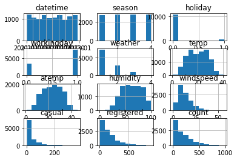
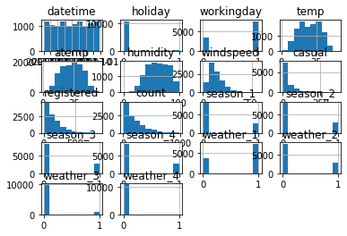
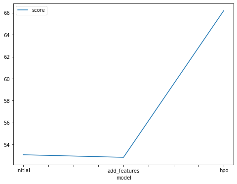
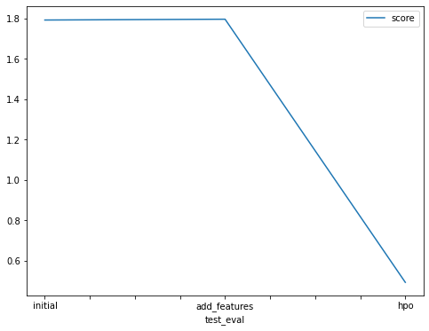

- Open account settings.
- Scroll down to API and click Create New API Token.


- Open up
kaggle.jsonand use the username and key.
This notebook is a template with each step that you need to complete for the project.
Please fill in your code where there are explicit ?
markers in the notebook. You are welcome to add more cells and code as
you see fit.
Once you have completed all the code implementations, please export your notebook as a HTML file so the reviews can view your code. Make sure you have all outputs correctly outputted.
File-> Export Notebook As... -> Export Notebook as HTML
There is a writeup to complete as well after all code implememtation is done. Please answer all questions and attach the necessary tables and charts. You can complete the writeup in either markdown or PDF.
Completing the code template and writeup template will cover all of the rubric points for this project.
The rubric contains "Stand Out Suggestions" for enhancing the project beyond the minimum requirements. The stand out suggestions are optional. If you decide to pursue the "stand out suggestions", you can include the code in this notebook and also discuss the results in the writeup file.
Below is example of steps to get the API username and key. Each student will have their own username and key.
kaggle.json and use the username and key. ml.t3.medium instance (2
vCPU + 4 GiB)Python 3 (MXNet 1.8 Python 3.7 CPU Optimized)!pip install -U pip
!pip install -U setuptools wheel
!pip install -U "mxnet<2.0.0" bokeh==2.0.1
!pip install autogluon --no-cache-dir
# Without --no-cache-dir, smaller aws instances may have trouble installingRequirement already satisfied: pip in /usr/local/lib/python3.7/site-packages (21.3.1)
Collecting pip
Using cached pip-23.1.2-py3-none-any.whl (2.1 MB)
Installing collected packages: pip
Attempting uninstall: pip
Found existing installation: pip 21.3.1
Uninstalling pip-21.3.1:
Successfully uninstalled pip-21.3.1
Successfully installed pip-23.1.2
WARNING: Running pip as the 'root' user can result in broken permissions and conflicting behaviour with the system package manager. It is recommended to use a virtual environment instead: https://pip.pypa.io/warnings/venv
Requirement already satisfied: setuptools in /usr/local/lib/python3.7/site-packages (59.3.0)
Collecting setuptools
Using cached setuptools-67.8.0-py3-none-any.whl (1.1 MB)
Collecting wheel
Using cached wheel-0.40.0-py3-none-any.whl (64 kB)
Installing collected packages: wheel, setuptools
Attempting uninstall: setuptools
Found existing installation: setuptools 59.3.0
Uninstalling setuptools-59.3.0:
Successfully uninstalled setuptools-59.3.0
Successfully installed setuptools-59.4.0 wheel-0.40.0
WARNING: Running pip as the 'root' user can result in broken permissions and conflicting behaviour with the system package manager. It is recommended to use a virtual environment instead: https://pip.pypa.io/warnings/venv
Collecting mxnet<2.0.0
Using cached mxnet-1.9.1-py3-none-manylinux2014_x86_64.whl (49.1 MB)
Collecting bokeh==2.0.1
Using cached bokeh-2.0.1-py3-none-any.whl
Requirement already satisfied: PyYAML>=3.10 in /usr/local/lib/python3.7/site-packages (from bokeh==2.0.1) (5.4.1)
Requirement already satisfied: python-dateutil>=2.1 in /usr/local/lib/python3.7/site-packages (from bokeh==2.0.1) (2.8.0)
Requirement already satisfied: Jinja2>=2.7 in /usr/local/lib/python3.7/site-packages (from bokeh==2.0.1) (3.0.3)
Requirement already satisfied: numpy>=1.11.3 in /usr/local/lib/python3.7/site-packages (from bokeh==2.0.1) (1.19.1)
Requirement already satisfied: pillow>=4.0 in /usr/local/lib/python3.7/site-packages (from bokeh==2.0.1) (8.4.0)
Requirement already satisfied: packaging>=16.8 in /usr/local/lib/python3.7/site-packages (from bokeh==2.0.1) (21.3)
Requirement already satisfied: tornado>=5 in /usr/local/lib/python3.7/site-packages (from bokeh==2.0.1) (6.0.4)
Requirement already satisfied: typing-extensions>=3.7.4 in /usr/local/lib/python3.7/site-packages (from bokeh==2.0.1) (4.0.1)
Requirement already satisfied: requests<3,>=2.20.0 in /usr/local/lib/python3.7/site-packages (from mxnet<2.0.0) (2.22.0)
Requirement already satisfied: graphviz<0.9.0,>=0.8.1 in /usr/local/lib/python3.7/site-packages (from mxnet<2.0.0) (0.8.4)
Requirement already satisfied: MarkupSafe>=2.0 in /usr/local/lib/python3.7/site-packages (from Jinja2>=2.7->bokeh==2.0.1) (2.0.1)
Requirement already satisfied: pyparsing!=3.0.5,>=2.0.2 in /usr/local/lib/python3.7/site-packages (from packaging>=16.8->bokeh==2.0.1) (3.0.6)
Requirement already satisfied: six>=1.5 in /usr/local/lib/python3.7/site-packages (from python-dateutil>=2.1->bokeh==2.0.1) (1.16.0)
Requirement already satisfied: chardet<3.1.0,>=3.0.2 in /usr/local/lib/python3.7/site-packages (from requests<3,>=2.20.0->mxnet<2.0.0) (3.0.4)
Requirement already satisfied: idna<2.9,>=2.5 in /usr/local/lib/python3.7/site-packages (from requests<3,>=2.20.0->mxnet<2.0.0) (2.8)
Requirement already satisfied: urllib3!=1.25.0,!=1.25.1,<1.26,>=1.21.1 in /usr/local/lib/python3.7/site-packages (from requests<3,>=2.20.0->mxnet<2.0.0) (1.25.11)
Requirement already satisfied: certifi>=2017.4.17 in /usr/local/lib/python3.7/site-packages (from requests<3,>=2.20.0->mxnet<2.0.0) (2021.10.8)
Installing collected packages: mxnet, bokeh
Attempting uninstall: bokeh
Found existing installation: bokeh 2.4.2
Uninstalling bokeh-2.4.2:
Successfully uninstalled bokeh-2.4.2
Successfully installed bokeh-2.0.1 mxnet-1.9.1
WARNING: Running pip as the 'root' user can result in broken permissions and conflicting behaviour with the system package manager. It is recommended to use a virtual environment instead: https://pip.pypa.io/warnings/venv
Collecting autogluon
Downloading autogluon-0.6.2-py3-none-any.whl (9.8 kB)
Collecting autogluon.core[all]==0.6.2 (from autogluon)
Downloading autogluon.core-0.6.2-py3-none-any.whl (226 kB)
━━━━━━━━━━━━━━━━━━━━━━━━━━━━━━━━━━━━━ 226.5/226.5 kB 138.7 MB/s eta 0:00:00
autogluon)
Downloading autogluon.features-0.6.2-py3-none-any.whl (60 kB)
━━━━━━━━━━━━━━━━━━━━━━━━━━━━━━━━━━━━━━━ 60.0/60.0 kB 170.5 MB/s eta 0:00:00
autogluon)
Downloading autogluon.tabular-0.6.2-py3-none-any.whl (292 kB)
━━━━━━━━━━━━━━━━━━━━━━━━━━━━━━━━━━━━━ 292.5/292.5 kB 129.4 MB/s eta 0:00:00
ultimodal==0.6.2 (from autogluon)
Downloading autogluon.multimodal-0.6.2-py3-none-any.whl (303 kB)
━━━━━━━━━━━━━━━━━━━━━━━━━━━━━━━━━━━━━ 303.4/303.4 kB 230.1 MB/s eta 0:00:00
autogluon)
Downloading autogluon.text-0.6.2-py3-none-any.whl (62 kB)
━━━━━━━━━━━━━━━━━━━━━━━━━━━━━━━━━━━━━━━ 62.1/62.1 kB 167.5 MB/s eta 0:00:00
autogluon)
Downloading autogluon.vision-0.6.2-py3-none-any.whl (49 kB)
━━━━━━━━━━━━━━━━━━━━━━━━━━━━━━━━━━━━━━━━ 49.8/49.8 kB 95.1 MB/s eta 0:00:00
eseries[all]==0.6.2 (from autogluon)
Downloading autogluon.timeseries-0.6.2-py3-none-any.whl (103 kB)
━━━━━━━━━━━━━━━━━━━━━━━━━━━━━━━━━━━━━ 103.6/103.6 kB 173.1 MB/s eta 0:00:00
py<1.24,>=1.21 (from autogluon.core[all]==0.6.2->autogluon)
Downloading numpy-1.21.6-cp37-cp37m-manylinux_2_12_x86_64.manylinux2010_x86_64.whl (15.7 MB)
━━━━━━━━━━━━━━━━━━━━━━━━━━━━━━━━━━━━━━━ 15.7/15.7 MB 166.3 MB/s eta 0:00:00a 0:00:01
autogluon.core[all]==0.6.2->autogluon)
Downloading scipy-1.7.3-cp37-cp37m-manylinux_2_12_x86_64.manylinux2010_x86_64.whl (38.1 MB)
━━━━━━━━━━━━━━━━━━━━━━━━━━━━━━━━━━━━━━━ 38.1/38.1 MB 168.1 MB/s eta 0:00:00a 0:00:01
ent already satisfied: scikit-learn<1.2,>=1.0.0 in /usr/local/lib/python3.7/site-packages (from autogluon.core[all]==0.6.2->autogluon) (1.0.1)
Requirement already satisfied: psutil<6,>=5.7.3 in /usr/local/lib/python3.7/site-packages (from autogluon.core[all]==0.6.2->autogluon) (5.8.0)
Requirement already satisfied: networkx<3.0,>=2.3 in /usr/local/lib/python3.7/site-packages (from autogluon.core[all]==0.6.2->autogluon) (2.6.3)
Requirement already satisfied: pandas!=1.4.0,<1.6,>=1.2.5 in /usr/local/lib/python3.7/site-packages (from autogluon.core[all]==0.6.2->autogluon) (1.3.4)
Requirement already satisfied: tqdm>=4.38.0 in /usr/local/lib/python3.7/site-packages (from autogluon.core[all]==0.6.2->autogluon) (4.39.0)
Requirement already satisfied: requests in /usr/local/lib/python3.7/site-packages (from autogluon.core[all]==0.6.2->autogluon) (2.22.0)
Requirement already satisfied: matplotlib in /usr/local/lib/python3.7/site-packages (from autogluon.core[all]==0.6.2->autogluon) (3.5.0)
Collecting dask<=2021.11.2,>=2021.09.1 (from autogluon.core[all]==0.6.2->autogluon)
Downloading dask-2021.11.2-py3-none-any.whl (1.0 MB)
━━━━━━━━━━━━━━━━━━━━━━━━━━━━━━━━━━━━━━━━ 1.0/1.0 MB 223.5 MB/s eta 0:00:00
autogluon.core[all]==0.6.2->autogluon)
Downloading distributed-2021.11.2-py3-none-any.whl (802 kB)
━━━━━━━━━━━━━━━━━━━━━━━━━━━━━━━━━━━━━ 802.2/802.2 kB 237.7 MB/s eta 0:00:00
ent already satisfied: boto3 in /usr/local/lib/python3.7/site-packages (from autogluon.core[all]==0.6.2->autogluon) (1.20.17)
Collecting autogluon.common==0.6.2 (from autogluon.core[all]==0.6.2->autogluon)
Downloading autogluon.common-0.6.2-py3-none-any.whl (44 kB)
━━━━━━━━━━━━━━━━━━━━━━━━━━━━━━━━━━━━━━━ 44.7/44.7 kB 147.6 MB/s eta 0:00:00
autogluon.core[all]==0.6.2->autogluon)
Downloading hyperopt-0.2.7-py2.py3-none-any.whl (1.6 MB)
━━━━━━━━━━━━━━━━━━━━━━━━━━━━━━━━━━━━━━━━ 1.6/1.6 MB 236.4 MB/s eta 0:00:00
autogluon.core[all]==0.6.2->autogluon)
Downloading ray-2.0.1-cp37-cp37m-manylinux2014_x86_64.whl (60.5 MB)
━━━━━━━━━━━━━━━━━━━━━━━━━━━━━━━━━━━━━━━ 60.5/60.5 MB 149.5 MB/s eta 0:00:00a 0:00:01
autogluon.multimodal==0.6.2->autogluon)
Downloading Pillow-9.4.0-cp37-cp37m-manylinux_2_17_x86_64.manylinux2014_x86_64.whl (3.3 MB)
━━━━━━━━━━━━━━━━━━━━━━━━━━━━━━━━━━━━━━━━ 3.3/3.3 MB 214.6 MB/s eta 0:00:00
a<=4.8.0 (from autogluon.multimodal==0.6.2->autogluon)
Downloading jsonschema-4.8.0-py3-none-any.whl (81 kB)
━━━━━━━━━━━━━━━━━━━━━━━━━━━━━━━━━━━━━━━ 81.4/81.4 kB 186.2 MB/s eta 0:00:00
autogluon.multimodal==0.6.2->autogluon)
Downloading seqeval-1.2.2.tar.gz (43 kB)
━━━━━━━━━━━━━━━━━━━━━━━━━━━━━━━━━━━━━━━ 43.6/43.6 kB 138.6 MB/s eta 0:00:00
etadata (setup.py) ... autogluon.multimodal==0.6.2->autogluon)
Downloading evaluate-0.3.0-py3-none-any.whl (72 kB)
━━━━━━━━━━━━━━━━━━━━━━━━━━━━━━━━━━━━━━━ 72.9/72.9 kB 168.8 MB/s eta 0:00:00
autogluon.multimodal==0.6.2->autogluon)
Downloading accelerate-0.13.2-py3-none-any.whl (148 kB)
━━━━━━━━━━━━━━━━━━━━━━━━━━━━━━━━━━━━━ 148.8/148.8 kB 196.1 MB/s eta 0:00:00
m<0.7.0 (from autogluon.multimodal==0.6.2->autogluon)
Downloading timm-0.6.13-py3-none-any.whl (549 kB)
━━━━━━━━━━━━━━━━━━━━━━━━━━━━━━━━━━━━━ 549.1/549.1 kB 138.8 MB/s eta 0:00:00
autogluon.multimodal==0.6.2->autogluon)
Downloading torch-1.12.1-cp37-cp37m-manylinux1_x86_64.whl (776.3 MB)
━━━━━━━━━━━━━━━━━━━━━━━━━━━━━━━━━━━━━ 776.3/776.3 MB 134.3 MB/s eta 0:00:0000:0100:01
autogluon.multimodal==0.6.2->autogluon)
Downloading torchvision-0.13.1-cp37-cp37m-manylinux1_x86_64.whl (19.1 MB)
━━━━━━━━━━━━━━━━━━━━━━━━━━━━━━━━━━━━━━━ 19.1/19.1 MB 151.8 MB/s eta 0:00:0000:0100:01
autogluon.multimodal==0.6.2->autogluon)
Downloading torchtext-0.13.1-cp37-cp37m-manylinux1_x86_64.whl (1.9 MB)
━━━━━━━━━━━━━━━━━━━━━━━━━━━━━━━━━━━━━━━━ 1.9/1.9 MB 195.3 MB/s eta 0:00:00
autogluon.multimodal==0.6.2->autogluon)
Downloading fairscale-0.4.6.tar.gz (248 kB)
━━━━━━━━━━━━━━━━━━━━━━━━━━━━━━━━━━━━━ 248.2/248.2 kB 196.4 MB/s eta 0:00:00
ents to build wheel ... etadata (pyproject.toml) ... age<0.20.0,>=0.19.1 (from autogluon.multimodal==0.6.2->autogluon)
Downloading scikit_image-0.19.3-cp37-cp37m-manylinux_2_12_x86_64.manylinux2010_x86_64.whl (13.5 MB)
━━━━━━━━━━━━━━━━━━━━━━━━━━━━━━━━━━━━━━━ 13.5/13.5 MB 174.5 MB/s eta 0:00:00a 0:00:01
art-open<5.3.0,>=5.2.1 (from autogluon.multimodal==0.6.2->autogluon)
Downloading smart_open-5.2.1-py3-none-any.whl (58 kB)
━━━━━━━━━━━━━━━━━━━━━━━━━━━━━━━━━━━━━━━ 58.6/58.6 kB 160.1 MB/s eta 0:00:00
autogluon.multimodal==0.6.2->autogluon)
Downloading pytorch_lightning-1.7.7-py3-none-any.whl (708 kB)
━━━━━━━━━━━━━━━━━━━━━━━━━━━━━━━━━━━━━ 708.1/708.1 kB 228.4 MB/s eta 0:00:00
autogluon.multimodal==0.6.2->autogluon)
Downloading text_unidecode-1.3-py2.py3-none-any.whl (78 kB)
━━━━━━━━━━━━━━━━━━━━━━━━━━━━━━━━━━━━━━━ 78.2/78.2 kB 157.3 MB/s eta 0:00:00
etrics<0.9.0,>=0.8.0 (from autogluon.multimodal==0.6.2->autogluon)
Downloading torchmetrics-0.8.2-py3-none-any.whl (409 kB)
━━━━━━━━━━━━━━━━━━━━━━━━━━━━━━━━━━━━━ 409.8/409.8 kB 218.5 MB/s eta 0:00:00
ers<4.24.0,>=4.23.0 (from autogluon.multimodal==0.6.2->autogluon)
Downloading transformers-4.23.1-py3-none-any.whl (5.3 MB)
━━━━━━━━━━━━━━━━━━━━━━━━━━━━━━━━━━━━━━━━ 5.3/5.3 MB 200.6 MB/s eta 0:00:00
autogluon.multimodal==0.6.2->autogluon)
Downloading nptyping-1.4.4-py3-none-any.whl (31 kB)
Collecting omegaconf<2.2.0,>=2.1.1 (from autogluon.multimodal==0.6.2->autogluon)
Downloading omegaconf-2.1.2-py3-none-any.whl (74 kB)
━━━━━━━━━━━━━━━━━━━━━━━━━━━━━━━━━━━━━━━ 74.7/74.7 kB 177.9 MB/s eta 0:00:00
autogluon.multimodal==0.6.2->autogluon)
Downloading sentencepiece-0.1.99-cp37-cp37m-manylinux_2_17_x86_64.manylinux2014_x86_64.whl (1.3 MB)
━━━━━━━━━━━━━━━━━━━━━━━━━━━━━━━━━━━━━━━━ 1.3/1.3 MB 234.7 MB/s eta 0:00:00
etric-learning<1.4.0,>=1.3.0 (from autogluon.multimodal==0.6.2->autogluon)
Downloading pytorch_metric_learning-1.3.2-py3-none-any.whl (109 kB)
━━━━━━━━━━━━━━━━━━━━━━━━━━━━━━━━━━━━━ 109.4/109.4 kB 198.9 MB/s eta 0:00:00
autogluon.multimodal==0.6.2->autogluon)
Downloading nlpaug-1.1.10-py3-none-any.whl (410 kB)
━━━━━━━━━━━━━━━━━━━━━━━━━━━━━━━━━━━━━ 410.8/410.8 kB 227.2 MB/s eta 0:00:00
autogluon.multimodal==0.6.2->autogluon)
Downloading nltk-3.8.1-py3-none-any.whl (1.5 MB)
━━━━━━━━━━━━━━━━━━━━━━━━━━━━━━━━━━━━━━━━ 1.5/1.5 MB 32.8 MB/s eta 0:00:00ta 0:00:01
im<=0.2.1,>0.1.5 (from autogluon.multimodal==0.6.2->autogluon)
Downloading openmim-0.2.1-py2.py3-none-any.whl (49 kB)
━━━━━━━━━━━━━━━━━━━━━━━━━━━━━━━━━━━━━━━ 49.7/49.7 kB 142.2 MB/s eta 0:00:00
l<=0.7.1,>=0.7.1 (from autogluon.multimodal==0.6.2->autogluon)
Downloading defusedxml-0.7.1-py2.py3-none-any.whl (25 kB)
Collecting albumentations<=1.2.0,>=1.1.0 (from autogluon.multimodal==0.6.2->autogluon)
Downloading albumentations-1.2.0-py3-none-any.whl (113 kB)
━━━━━━━━━━━━━━━━━━━━━━━━━━━━━━━━━━━━━ 113.5/113.5 kB 197.2 MB/s eta 0:00:00
autogluon.tabular[all]==0.6.2->autogluon)
Downloading catboost-1.1.1-cp37-none-manylinux1_x86_64.whl (76.6 MB)
━━━━━━━━━━━━━━━━━━━━━━━━━━━━━━━━━━━━━━━ 76.6/76.6 MB 181.6 MB/s eta 0:00:0000:0100:01
autogluon.tabular[all]==0.6.2->autogluon)
Downloading xgboost-1.6.2-py3-none-manylinux2014_x86_64.whl (255.9 MB)
━━━━━━━━━━━━━━━━━━━━━━━━━━━━━━━━━━━━━ 255.9/255.9 MB 168.6 MB/s eta 0:00:0000:0100:01
<3.4,>=3.3 (from autogluon.tabular[all]==0.6.2->autogluon)
Downloading lightgbm-3.3.5-py3-none-manylinux1_x86_64.whl (2.0 MB)
━━━━━━━━━━━━━━━━━━━━━━━━━━━━━━━━━━━━━━━━ 2.0/2.0 MB 228.8 MB/s eta 0:00:00
autogluon.tabular[all]==0.6.2->autogluon)
Downloading fastai-2.7.12-py3-none-any.whl (233 kB)
━━━━━━━━━━━━━━━━━━━━━━━━━━━━━━━━━━━━━ 233.1/233.1 kB 214.1 MB/s eta 0:00:00
ent already satisfied: joblib~=1.1 in /usr/local/lib/python3.7/site-packages (from autogluon.timeseries[all]==0.6.2->autogluon) (1.1.0)
Collecting statsmodels~=0.13.0 (from autogluon.timeseries[all]==0.6.2->autogluon)
Downloading statsmodels-0.13.5-cp37-cp37m-manylinux_2_17_x86_64.manylinux2014_x86_64.whl (9.9 MB)
━━━━━━━━━━━━━━━━━━━━━━━━━━━━━━━━━━━━━━━━ 9.9/9.9 MB 194.1 MB/s eta 0:00:00a 0:00:01
autogluon.timeseries[all]==0.6.2->autogluon)
Downloading gluonts-0.11.12-py3-none-any.whl (1.0 MB)
━━━━━━━━━━━━━━━━━━━━━━━━━━━━━━━━━━━━━━━━ 1.0/1.0 MB 170.3 MB/s eta 0:00:00
darima~=1.8.2 (from autogluon.timeseries[all]==0.6.2->autogluon)
Downloading pmdarima-1.8.5-cp37-cp37m-manylinux_2_17_x86_64.manylinux2014_x86_64.manylinux_2_24_x86_64.whl (1.4 MB)
━━━━━━━━━━━━━━━━━━━━━━━━━━━━━━━━━━━━━━━━ 1.4/1.4 MB 233.5 MB/s eta 0:00:00
e<0.14,>=0.13.1 (from autogluon.timeseries[all]==0.6.2->autogluon)
Downloading sktime-0.13.4-py3-none-any.whl (7.0 MB)
━━━━━━━━━━━━━━━━━━━━━━━━━━━━━━━━━━━━━━━━ 7.0/7.0 MB 198.0 MB/s eta 0:00:00
autogluon.timeseries[all]==0.6.2->autogluon)
Downloading tbats-1.1.3-py3-none-any.whl (44 kB)
━━━━━━━━━━━━━━━━━━━━━━━━━━━━━━━━━━━━━━━ 44.0/44.0 kB 129.3 MB/s eta 0:00:00
autogluon.vision==0.6.2->autogluon)
Downloading gluoncv-0.10.5.post0-py2.py3-none-any.whl (1.3 MB)
━━━━━━━━━━━━━━━━━━━━━━━━━━━━━━━━━━━━━━━━ 1.3/1.3 MB 185.9 MB/s eta 0:00:00
ent already satisfied: setuptools in /usr/local/lib/python3.7/site-packages (from autogluon.common==0.6.2->autogluon.core[all]==0.6.2->autogluon) (59.4.0)
Requirement already satisfied: packaging>=20.0 in /usr/local/lib/python3.7/site-packages (from accelerate<0.14,>=0.9->autogluon.multimodal==0.6.2->autogluon) (21.3)
Requirement already satisfied: pyyaml in /usr/local/lib/python3.7/site-packages (from accelerate<0.14,>=0.9->autogluon.multimodal==0.6.2->autogluon) (5.4.1)
INFO: pip is looking at multiple versions of albumentations to determine which version is compatible with other requirements. This could take a while.
Collecting albumentations<=1.2.0,>=1.1.0 (from autogluon.multimodal==0.6.2->autogluon)
Downloading albumentations-1.1.0-py3-none-any.whl (102 kB)
━━━━━━━━━━━━━━━━━━━━━━━━━━━━━━━━━━━━━ 102.4/102.4 kB 109.9 MB/s eta 0:00:00
albumentations<=1.2.0,>=1.1.0->autogluon.multimodal==0.6.2->autogluon)
Downloading qudida-0.0.4-py3-none-any.whl (3.5 kB)
Collecting opencv-python-headless>=4.1.1 (from albumentations<=1.2.0,>=1.1.0->autogluon.multimodal==0.6.2->autogluon)
Downloading opencv_python_headless-4.7.0.72-cp37-abi3-manylinux_2_17_x86_64.manylinux2014_x86_64.whl (49.2 MB)
━━━━━━━━━━━━━━━━━━━━━━━━━━━━━━━━━━━━━━━ 49.2/49.2 MB 174.3 MB/s eta 0:00:00a 0:00:01
ent already satisfied: graphviz in /usr/local/lib/python3.7/site-packages (from catboost<1.2,>=1.0->autogluon.tabular[all]==0.6.2->autogluon) (0.8.4)
Requirement already satisfied: plotly in /usr/local/lib/python3.7/site-packages (from catboost<1.2,>=1.0->autogluon.tabular[all]==0.6.2->autogluon) (5.4.0)
Requirement already satisfied: six in /usr/local/lib/python3.7/site-packages (from catboost<1.2,>=1.0->autogluon.tabular[all]==0.6.2->autogluon) (1.16.0)
Requirement already satisfied: cloudpickle>=1.1.1 in /usr/local/lib/python3.7/site-packages (from dask<=2021.11.2,>=2021.09.1->autogluon.core[all]==0.6.2->autogluon) (2.0.0)
Requirement already satisfied: fsspec>=0.6.0 in /usr/local/lib/python3.7/site-packages (from dask<=2021.11.2,>=2021.09.1->autogluon.core[all]==0.6.2->autogluon) (2021.11.1)
Collecting partd>=0.3.10 (from dask<=2021.11.2,>=2021.09.1->autogluon.core[all]==0.6.2->autogluon)
Downloading partd-1.4.0-py3-none-any.whl (18 kB)
Collecting toolz>=0.8.2 (from dask<=2021.11.2,>=2021.09.1->autogluon.core[all]==0.6.2->autogluon)
Downloading toolz-0.12.0-py3-none-any.whl (55 kB)
━━━━━━━━━━━━━━━━━━━━━━━━━━━━━━━━━━━━━━━ 55.8/55.8 kB 157.8 MB/s eta 0:00:00
distributed<=2021.11.2,>=2021.09.1->autogluon.core[all]==0.6.2->autogluon)
Downloading click-8.1.3-py3-none-any.whl (96 kB)
━━━━━━━━━━━━━━━━━━━━━━━━━━━━━━━━━━━━━━━ 96.6/96.6 kB 193.4 MB/s eta 0:00:00
ent already satisfied: jinja2 in /usr/local/lib/python3.7/site-packages (from distributed<=2021.11.2,>=2021.09.1->autogluon.core[all]==0.6.2->autogluon) (3.0.3)
Collecting msgpack>=0.6.0 (from distributed<=2021.11.2,>=2021.09.1->autogluon.core[all]==0.6.2->autogluon)
Downloading msgpack-1.0.5-cp37-cp37m-manylinux_2_17_x86_64.manylinux2014_x86_64.whl (299 kB)
━━━━━━━━━━━━━━━━━━━━━━━━━━━━━━━━━━━━━ 299.7/299.7 kB 221.9 MB/s eta 0:00:00
distributed<=2021.11.2,>=2021.09.1->autogluon.core[all]==0.6.2->autogluon)
Downloading sortedcontainers-2.4.0-py2.py3-none-any.whl (29 kB)
Collecting tblib>=1.6.0 (from distributed<=2021.11.2,>=2021.09.1->autogluon.core[all]==0.6.2->autogluon)
Downloading tblib-1.7.0-py2.py3-none-any.whl (12 kB)
Collecting zict>=0.1.3 (from distributed<=2021.11.2,>=2021.09.1->autogluon.core[all]==0.6.2->autogluon)
Downloading zict-2.2.0-py2.py3-none-any.whl (23 kB)
Requirement already satisfied: tornado>=5 in /usr/local/lib/python3.7/site-packages (from distributed<=2021.11.2,>=2021.09.1->autogluon.core[all]==0.6.2->autogluon) (6.0.4)
Collecting datasets>=2.0.0 (from evaluate<=0.3.0->autogluon.multimodal==0.6.2->autogluon)
Downloading datasets-2.12.0-py3-none-any.whl (474 kB)
━━━━━━━━━━━━━━━━━━━━━━━━━━━━━━━━━━━━━ 474.6/474.6 kB 227.8 MB/s eta 0:00:00
ent already satisfied: dill in /usr/local/lib/python3.7/site-packages (from evaluate<=0.3.0->autogluon.multimodal==0.6.2->autogluon) (0.3.4)
Collecting tqdm>=4.38.0 (from autogluon.core[all]==0.6.2->autogluon)
Downloading tqdm-4.65.0-py3-none-any.whl (77 kB)
━━━━━━━━━━━━━━━━━━━━━━━━━━━━━━━━━━━━━━━ 77.1/77.1 kB 156.5 MB/s eta 0:00:00
evaluate<=0.3.0->autogluon.multimodal==0.6.2->autogluon)
Downloading xxhash-3.2.0-cp37-cp37m-manylinux_2_17_x86_64.manylinux2014_x86_64.whl (213 kB)
━━━━━━━━━━━━━━━━━━━━━━━━━━━━━━━━━━━━━ 213.1/213.1 kB 120.6 MB/s eta 0:00:00
ent already satisfied: multiprocess in /usr/local/lib/python3.7/site-packages (from evaluate<=0.3.0->autogluon.multimodal==0.6.2->autogluon) (0.70.12.2)
Collecting huggingface-hub>=0.7.0 (from evaluate<=0.3.0->autogluon.multimodal==0.6.2->autogluon)
Downloading huggingface_hub-0.15.1-py3-none-any.whl (236 kB)
━━━━━━━━━━━━━━━━━━━━━━━━━━━━━━━━━━━━━ 236.8/236.8 kB 201.3 MB/s eta 0:00:00
evaluate<=0.3.0->autogluon.multimodal==0.6.2->autogluon)
Downloading responses-0.18.0-py3-none-any.whl (38 kB)
Requirement already satisfied: importlib-metadata in /usr/local/lib/python3.7/site-packages (from evaluate<=0.3.0->autogluon.multimodal==0.6.2->autogluon) (4.8.2)
Requirement already satisfied: pip in /usr/local/lib/python3.7/site-packages (from fastai<2.8,>=2.3.1->autogluon.tabular[all]==0.6.2->autogluon) (23.1.2)
Collecting fastdownload<2,>=0.0.5 (from fastai<2.8,>=2.3.1->autogluon.tabular[all]==0.6.2->autogluon)
Downloading fastdownload-0.0.7-py3-none-any.whl (12 kB)
Collecting fastcore<1.6,>=1.5.29 (from fastai<2.8,>=2.3.1->autogluon.tabular[all]==0.6.2->autogluon)
Downloading fastcore-1.5.29-py3-none-any.whl (67 kB)
━━━━━━━━━━━━━━━━━━━━━━━━━━━━━━━━━━━━━━━ 67.6/67.6 kB 173.2 MB/s eta 0:00:00
fastai<2.8,>=2.3.1->autogluon.tabular[all]==0.6.2->autogluon)
Downloading fastprogress-1.0.3-py3-none-any.whl (12 kB)
Collecting spacy<4 (from fastai<2.8,>=2.3.1->autogluon.tabular[all]==0.6.2->autogluon)
Downloading spacy-3.5.3-cp37-cp37m-manylinux_2_17_x86_64.manylinux2014_x86_64.whl (6.5 MB)
━━━━━━━━━━━━━━━━━━━━━━━━━━━━━━━━━━━━━━━━ 6.5/6.5 MB 147.0 MB/s eta 0:00:00a 0:00:01
ent already satisfied: portalocker in /usr/local/lib/python3.7/site-packages (from gluoncv<0.10.6,>=0.10.5->autogluon.vision==0.6.2->autogluon) (2.3.2)
Collecting yacs (from gluoncv<0.10.6,>=0.10.5->autogluon.vision==0.6.2->autogluon)
Downloading yacs-0.1.8-py3-none-any.whl (14 kB)
Collecting autocfg (from gluoncv<0.10.6,>=0.10.5->autogluon.vision==0.6.2->autogluon)
Downloading autocfg-0.0.8-py3-none-any.whl (13 kB)
Requirement already satisfied: opencv-python in /usr/local/lib/python3.7/site-packages (from gluoncv<0.10.6,>=0.10.5->autogluon.vision==0.6.2->autogluon) (4.5.4.60)
Collecting pydantic~=1.7 (from gluonts~=0.11.0->autogluon.timeseries[all]==0.6.2->autogluon)
Downloading pydantic-1.10.9-cp37-cp37m-manylinux_2_17_x86_64.manylinux2014_x86_64.whl (3.1 MB)
━━━━━━━━━━━━━━━━━━━━━━━━━━━━━━━━━━━━━━━━ 3.1/3.1 MB 192.2 MB/s eta 0:00:00
ent already satisfied: typing-extensions~=4.0 in /usr/local/lib/python3.7/site-packages (from gluonts~=0.11.0->autogluon.timeseries[all]==0.6.2->autogluon) (4.0.1)
Collecting future (from hyperopt<0.2.8,>=0.2.7->autogluon.core[all]==0.6.2->autogluon)
Downloading future-0.18.3.tar.gz (840 kB)
━━━━━━━━━━━━━━━━━━━━━━━━━━━━━━━━━━━━━ 840.9/840.9 kB 225.9 MB/s eta 0:00:00
etadata (setup.py) ... hyperopt<0.2.8,>=0.2.7->autogluon.core[all]==0.6.2->autogluon)
Downloading py4j-0.10.9.7-py2.py3-none-any.whl (200 kB)
━━━━━━━━━━━━━━━━━━━━━━━━━━━━━━━━━━━━━ 200.5/200.5 kB 206.4 MB/s eta 0:00:00
ent already satisfied: attrs>=17.4.0 in /usr/local/lib/python3.7/site-packages (from jsonschema<=4.8.0->autogluon.multimodal==0.6.2->autogluon) (21.2.0)
Collecting importlib-resources>=1.4.0 (from jsonschema<=4.8.0->autogluon.multimodal==0.6.2->autogluon)
Downloading importlib_resources-5.12.0-py3-none-any.whl (36 kB)
Collecting pyrsistent!=0.17.0,!=0.17.1,!=0.17.2,>=0.14.0 (from jsonschema<=4.8.0->autogluon.multimodal==0.6.2->autogluon)
Downloading pyrsistent-0.19.3-py3-none-any.whl (57 kB)
━━━━━━━━━━━━━━━━━━━━━━━━━━━━━━━━━━━━━━━ 57.5/57.5 kB 147.0 MB/s eta 0:00:00
ent already satisfied: wheel in /usr/local/lib/python3.7/site-packages (from lightgbm<3.4,>=3.3->autogluon.tabular[all]==0.6.2->autogluon) (0.40.0)
Collecting regex>=2021.8.3 (from nltk<4.0.0,>=3.4.5->autogluon.multimodal==0.6.2->autogluon)
Downloading regex-2023.6.3-cp37-cp37m-manylinux_2_17_x86_64.manylinux2014_x86_64.whl (755 kB)
━━━━━━━━━━━━━━━━━━━━━━━━━━━━━━━━━━━━━ 755.7/755.7 kB 226.2 MB/s eta 0:00:00
nptyping<1.5.0,>=1.4.4->autogluon.multimodal==0.6.2->autogluon)
Downloading typish-1.9.3-py3-none-any.whl (45 kB)
━━━━━━━━━━━━━━━━━━━━━━━━━━━━━━━━━━━━━━━ 45.1/45.1 kB 139.3 MB/s eta 0:00:00
e==4.8 (from omegaconf<2.2.0,>=2.1.1->autogluon.multimodal==0.6.2->autogluon)
Downloading antlr4-python3-runtime-4.8.tar.gz (112 kB)
━━━━━━━━━━━━━━━━━━━━━━━━━━━━━━━━━━━━━ 112.4/112.4 kB 201.9 MB/s eta 0:00:00
etadata (setup.py) ... ent already satisfied: colorama in /usr/local/lib/python3.7/site-packages (from openmim<=0.2.1,>0.1.5->autogluon.multimodal==0.6.2->autogluon) (0.4.3)
Collecting model-index (from openmim<=0.2.1,>0.1.5->autogluon.multimodal==0.6.2->autogluon)
Downloading model_index-0.1.11-py3-none-any.whl (34 kB)
Collecting rich (from openmim<=0.2.1,>0.1.5->autogluon.multimodal==0.6.2->autogluon)
Downloading rich-13.4.1-py3-none-any.whl (239 kB)
━━━━━━━━━━━━━━━━━━━━━━━━━━━━━━━━━━━━━ 239.4/239.4 kB 221.5 MB/s eta 0:00:00
ent already satisfied: tabulate in /usr/local/lib/python3.7/site-packages (from openmim<=0.2.1,>0.1.5->autogluon.multimodal==0.6.2->autogluon) (0.8.9)
Requirement already satisfied: python-dateutil>=2.7.3 in /usr/local/lib/python3.7/site-packages (from pandas!=1.4.0,<1.6,>=1.2.5->autogluon.core[all]==0.6.2->autogluon) (2.8.0)
Requirement already satisfied: pytz>=2017.3 in /usr/local/lib/python3.7/site-packages (from pandas!=1.4.0,<1.6,>=1.2.5->autogluon.core[all]==0.6.2->autogluon) (2021.3)
Requirement already satisfied: Cython!=0.29.18,>=0.29 in /usr/local/lib/python3.7/site-packages (from pmdarima~=1.8.2->autogluon.timeseries[all]==0.6.2->autogluon) (0.29.24)
Requirement already satisfied: urllib3 in /usr/local/lib/python3.7/site-packages (from pmdarima~=1.8.2->autogluon.timeseries[all]==0.6.2->autogluon) (1.25.11)
Collecting tensorboard>=2.9.1 (from pytorch-lightning<1.8.0,>=1.7.4->autogluon.multimodal==0.6.2->autogluon)
Downloading tensorboard-2.11.2-py3-none-any.whl (6.0 MB)
━━━━━━━━━━━━━━━━━━━━━━━━━━━━━━━━━━━━━━━━ 6.0/6.0 MB 187.6 MB/s eta 0:00:00
pytorch-lightning<1.8.0,>=1.7.4->autogluon.multimodal==0.6.2->autogluon)
Downloading pyDeprecate-0.3.2-py3-none-any.whl (10 kB)
Collecting click>=6.6 (from distributed<=2021.11.2,>=2021.09.1->autogluon.core[all]==0.6.2->autogluon)
Downloading click-8.0.4-py3-none-any.whl (97 kB)
━━━━━━━━━━━━━━━━━━━━━━━━━━━━━━━━━━━━━━━ 97.5/97.5 kB 187.1 MB/s eta 0:00:00
ray[tune]<2.1,>=2.0->autogluon.core[all]==0.6.2->autogluon)
Downloading filelock-3.12.0-py3-none-any.whl (10 kB)
Requirement already satisfied: protobuf<4.0.0,>=3.15.3 in /usr/local/lib/python3.7/site-packages (from ray[tune]<2.1,>=2.0->autogluon.core[all]==0.6.2->autogluon) (3.19.1)
Collecting aiosignal (from ray[tune]<2.1,>=2.0->autogluon.core[all]==0.6.2->autogluon)
Downloading aiosignal-1.3.1-py3-none-any.whl (7.6 kB)
Collecting frozenlist (from ray[tune]<2.1,>=2.0->autogluon.core[all]==0.6.2->autogluon)
Downloading frozenlist-1.3.3-cp37-cp37m-manylinux_2_5_x86_64.manylinux1_x86_64.manylinux_2_17_x86_64.manylinux2014_x86_64.whl (148 kB)
━━━━━━━━━━━━━━━━━━━━━━━━━━━━━━━━━━━━━ 148.0/148.0 kB 193.3 MB/s eta 0:00:00
ray[tune]<2.1,>=2.0->autogluon.core[all]==0.6.2->autogluon)
Downloading virtualenv-20.23.0-py3-none-any.whl (3.3 MB)
━━━━━━━━━━━━━━━━━━━━━━━━━━━━━━━━━━━━━━━━ 3.3/3.3 MB 221.3 MB/s eta 0:00:00
ray[tune]<2.1,>=2.0->autogluon.core[all]==0.6.2->autogluon)
Downloading grpcio-1.43.0-cp37-cp37m-manylinux_2_17_x86_64.manylinux2014_x86_64.whl (4.1 MB)
━━━━━━━━━━━━━━━━━━━━━━━━━━━━━━━━━━━━━━━━ 4.1/4.1 MB 196.9 MB/s eta 0:00:00
ray[tune]<2.1,>=2.0->autogluon.core[all]==0.6.2->autogluon)
Downloading tensorboardX-2.6-py2.py3-none-any.whl (114 kB)
━━━━━━━━━━━━━━━━━━━━━━━━━━━━━━━━━━━━━ 114.5/114.5 kB 200.0 MB/s eta 0:00:00
ent already satisfied: chardet<3.1.0,>=3.0.2 in /usr/local/lib/python3.7/site-packages (from requests->autogluon.core[all]==0.6.2->autogluon) (3.0.4)
Requirement already satisfied: idna<2.9,>=2.5 in /usr/local/lib/python3.7/site-packages (from requests->autogluon.core[all]==0.6.2->autogluon) (2.8)
Requirement already satisfied: certifi>=2017.4.17 in /usr/local/lib/python3.7/site-packages (from requests->autogluon.core[all]==0.6.2->autogluon) (2021.10.8)
Requirement already satisfied: imageio>=2.4.1 in /usr/local/lib/python3.7/site-packages (from scikit-image<0.20.0,>=0.19.1->autogluon.multimodal==0.6.2->autogluon) (2.13.1)
Collecting tifffile>=2019.7.26 (from scikit-image<0.20.0,>=0.19.1->autogluon.multimodal==0.6.2->autogluon)
Downloading tifffile-2021.11.2-py3-none-any.whl (178 kB)
━━━━━━━━━━━━━━━━━━━━━━━━━━━━━━━━━━━━━ 178.9/178.9 kB 212.6 MB/s eta 0:00:00
scikit-image<0.20.0,>=0.19.1->autogluon.multimodal==0.6.2->autogluon)
Downloading PyWavelets-1.3.0-cp37-cp37m-manylinux_2_5_x86_64.manylinux1_x86_64.manylinux_2_12_x86_64.manylinux2010_x86_64.whl (6.4 MB)
━━━━━━━━━━━━━━━━━━━━━━━━━━━━━━━━━━━━━━━━ 6.4/6.4 MB 199.3 MB/s eta 0:00:00
ent already satisfied: threadpoolctl>=2.0.0 in /usr/local/lib/python3.7/site-packages (from scikit-learn<1.2,>=1.0.0->autogluon.core[all]==0.6.2->autogluon) (3.0.0)
Collecting deprecated>=1.2.13 (from sktime<0.14,>=0.13.1->autogluon.timeseries[all]==0.6.2->autogluon)
Downloading Deprecated-1.2.14-py2.py3-none-any.whl (9.6 kB)
Requirement already satisfied: numba>=0.53 in /usr/local/lib/python3.7/site-packages (from sktime<0.14,>=0.13.1->autogluon.timeseries[all]==0.6.2->autogluon) (0.53.1)
Collecting patsy>=0.5.2 (from statsmodels~=0.13.0->autogluon.timeseries[all]==0.6.2->autogluon)
Downloading patsy-0.5.3-py2.py3-none-any.whl (233 kB)
━━━━━━━━━━━━━━━━━━━━━━━━━━━━━━━━━━━━━ 233.8/233.8 kB 211.9 MB/s eta 0:00:00
transformers<4.24.0,>=4.23.0->autogluon.multimodal==0.6.2->autogluon)
Downloading tokenizers-0.13.3-cp37-cp37m-manylinux_2_17_x86_64.manylinux2014_x86_64.whl (7.8 MB)
━━━━━━━━━━━━━━━━━━━━━━━━━━━━━━━━━━━━━━━━ 7.8/7.8 MB 190.6 MB/s eta 0:00:00a 0:00:01
ent already satisfied: botocore<1.24.0,>=1.23.17 in /usr/local/lib/python3.7/site-packages (from boto3->autogluon.core[all]==0.6.2->autogluon) (1.23.17)
Requirement already satisfied: jmespath<1.0.0,>=0.7.1 in /usr/local/lib/python3.7/site-packages (from boto3->autogluon.core[all]==0.6.2->autogluon) (0.10.0)
Requirement already satisfied: s3transfer<0.6.0,>=0.5.0 in /usr/local/lib/python3.7/site-packages (from boto3->autogluon.core[all]==0.6.2->autogluon) (0.5.0)
Requirement already satisfied: cycler>=0.10 in /usr/local/lib/python3.7/site-packages (from matplotlib->autogluon.core[all]==0.6.2->autogluon) (0.11.0)
Requirement already satisfied: fonttools>=4.22.0 in /usr/local/lib/python3.7/site-packages (from matplotlib->autogluon.core[all]==0.6.2->autogluon) (4.28.2)
Requirement already satisfied: kiwisolver>=1.0.1 in /usr/local/lib/python3.7/site-packages (from matplotlib->autogluon.core[all]==0.6.2->autogluon) (1.3.2)
Requirement already satisfied: pyparsing>=2.2.1 in /usr/local/lib/python3.7/site-packages (from matplotlib->autogluon.core[all]==0.6.2->autogluon) (3.0.6)
Requirement already satisfied: setuptools-scm>=4 in /usr/local/lib/python3.7/site-packages (from matplotlib->autogluon.core[all]==0.6.2->autogluon) (6.3.2)
Collecting pyarrow>=8.0.0 (from datasets>=2.0.0->evaluate<=0.3.0->autogluon.multimodal==0.6.2->autogluon)
Downloading pyarrow-12.0.0-cp37-cp37m-manylinux_2_17_x86_64.manylinux2014_x86_64.whl (39.1 MB)
━━━━━━━━━━━━━━━━━━━━━━━━━━━━━━━━━━━━━━━ 39.1/39.1 MB 185.0 MB/s eta 0:00:00a 0:00:01
datasets>=2.0.0->evaluate<=0.3.0->autogluon.multimodal==0.6.2->autogluon)
Downloading aiohttp-3.8.4-cp37-cp37m-manylinux_2_17_x86_64.manylinux2014_x86_64.whl (948 kB)
━━━━━━━━━━━━━━━━━━━━━━━━━━━━━━━━━━━━━ 948.1/948.1 kB 206.8 MB/s eta 0:00:00
deprecated>=1.2.13->sktime<0.14,>=0.13.1->autogluon.timeseries[all]==0.6.2->autogluon)
Downloading wrapt-1.15.0-cp37-cp37m-manylinux_2_5_x86_64.manylinux1_x86_64.manylinux_2_17_x86_64.manylinux2014_x86_64.whl (75 kB)
━━━━━━━━━━━━━━━━━━━━━━━━━━━━━━━━━━━━━━━ 75.7/75.7 kB 176.1 MB/s eta 0:00:00
ent already satisfied: zipp>=3.1.0 in /usr/local/lib/python3.7/site-packages (from importlib-resources>=1.4.0->jsonschema<=4.8.0->autogluon.multimodal==0.6.2->autogluon) (3.6.0)
Requirement already satisfied: llvmlite<0.37,>=0.36.0rc1 in /usr/local/lib/python3.7/site-packages (from numba>=0.53->sktime<0.14,>=0.13.1->autogluon.timeseries[all]==0.6.2->autogluon) (0.36.0)
Collecting locket (from partd>=0.3.10->dask<=2021.11.2,>=2021.09.1->autogluon.core[all]==0.6.2->autogluon)
Downloading locket-1.0.0-py2.py3-none-any.whl (4.4 kB)
Collecting typing-extensions~=4.0 (from gluonts~=0.11.0->autogluon.timeseries[all]==0.6.2->autogluon)
Downloading typing_extensions-4.6.3-py3-none-any.whl (31 kB)
Requirement already satisfied: tomli>=1.0.0 in /usr/local/lib/python3.7/site-packages (from setuptools-scm>=4->matplotlib->autogluon.core[all]==0.6.2->autogluon) (1.2.2)
Collecting spacy-legacy<3.1.0,>=3.0.11 (from spacy<4->fastai<2.8,>=2.3.1->autogluon.tabular[all]==0.6.2->autogluon)
Downloading spacy_legacy-3.0.12-py2.py3-none-any.whl (29 kB)
Collecting spacy-loggers<2.0.0,>=1.0.0 (from spacy<4->fastai<2.8,>=2.3.1->autogluon.tabular[all]==0.6.2->autogluon)
Downloading spacy_loggers-1.0.4-py3-none-any.whl (11 kB)
Collecting murmurhash<1.1.0,>=0.28.0 (from spacy<4->fastai<2.8,>=2.3.1->autogluon.tabular[all]==0.6.2->autogluon)
Downloading murmurhash-1.0.9-cp37-cp37m-manylinux_2_5_x86_64.manylinux1_x86_64.manylinux_2_17_x86_64.manylinux2014_x86_64.whl (21 kB)
Collecting cymem<2.1.0,>=2.0.2 (from spacy<4->fastai<2.8,>=2.3.1->autogluon.tabular[all]==0.6.2->autogluon)
Downloading cymem-2.0.7-cp37-cp37m-manylinux_2_17_x86_64.manylinux2014_x86_64.whl (36 kB)
Collecting preshed<3.1.0,>=3.0.2 (from spacy<4->fastai<2.8,>=2.3.1->autogluon.tabular[all]==0.6.2->autogluon)
Downloading preshed-3.0.8-cp37-cp37m-manylinux_2_5_x86_64.manylinux1_x86_64.manylinux_2_17_x86_64.manylinux2014_x86_64.whl (126 kB)
━━━━━━━━━━━━━━━━━━━━━━━━━━━━━━━━━━━━━ 126.6/126.6 kB 187.2 MB/s eta 0:00:00
spacy<4->fastai<2.8,>=2.3.1->autogluon.tabular[all]==0.6.2->autogluon)
Downloading thinc-8.1.10-cp37-cp37m-manylinux_2_17_x86_64.manylinux2014_x86_64.whl (914 kB)
━━━━━━━━━━━━━━━━━━━━━━━━━━━━━━━━━━━━━ 914.3/914.3 kB 238.2 MB/s eta 0:00:00
spacy<4->fastai<2.8,>=2.3.1->autogluon.tabular[all]==0.6.2->autogluon)
Downloading wasabi-1.1.2-py3-none-any.whl (27 kB)
Collecting srsly<3.0.0,>=2.4.3 (from spacy<4->fastai<2.8,>=2.3.1->autogluon.tabular[all]==0.6.2->autogluon)
Downloading srsly-2.4.6-cp37-cp37m-manylinux_2_17_x86_64.manylinux2014_x86_64.whl (490 kB)
━━━━━━━━━━━━━━━━━━━━━━━━━━━━━━━━━━━━━ 490.9/490.9 kB 229.5 MB/s eta 0:00:00
spacy<4->fastai<2.8,>=2.3.1->autogluon.tabular[all]==0.6.2->autogluon)
Downloading catalogue-2.0.8-py3-none-any.whl (17 kB)
Collecting typer<0.8.0,>=0.3.0 (from spacy<4->fastai<2.8,>=2.3.1->autogluon.tabular[all]==0.6.2->autogluon)
Downloading typer-0.7.0-py3-none-any.whl (38 kB)
Collecting pathy>=0.10.0 (from spacy<4->fastai<2.8,>=2.3.1->autogluon.tabular[all]==0.6.2->autogluon)
Downloading pathy-0.10.1-py3-none-any.whl (48 kB)
━━━━━━━━━━━━━━━━━━━━━━━━━━━━━━━━━━━━━━━ 48.9/48.9 kB 158.1 MB/s eta 0:00:00
spacy<4->fastai<2.8,>=2.3.1->autogluon.tabular[all]==0.6.2->autogluon)
Downloading langcodes-3.3.0-py3-none-any.whl (181 kB)
━━━━━━━━━━━━━━━━━━━━━━━━━━━━━━━━━━━━━ 181.6/181.6 kB 191.7 MB/s eta 0:00:00
gluonts~=0.11.0->autogluon.timeseries[all]==0.6.2->autogluon)
Downloading typing_extensions-4.4.0-py3-none-any.whl (26 kB)
Collecting absl-py>=0.4 (from tensorboard>=2.9.1->pytorch-lightning<1.8.0,>=1.7.4->autogluon.multimodal==0.6.2->autogluon)
Downloading absl_py-1.4.0-py3-none-any.whl (126 kB)
━━━━━━━━━━━━━━━━━━━━━━━━━━━━━━━━━━━━━ 126.5/126.5 kB 192.8 MB/s eta 0:00:00
tensorboard>=2.9.1->pytorch-lightning<1.8.0,>=1.7.4->autogluon.multimodal==0.6.2->autogluon)
Downloading google_auth-2.19.1-py2.py3-none-any.whl (181 kB)
━━━━━━━━━━━━━━━━━━━━━━━━━━━━━━━━━━━━━ 181.3/181.3 kB 214.0 MB/s eta 0:00:00
tensorboard>=2.9.1->pytorch-lightning<1.8.0,>=1.7.4->autogluon.multimodal==0.6.2->autogluon)
Downloading google_auth_oauthlib-0.4.6-py2.py3-none-any.whl (18 kB)
Collecting markdown>=2.6.8 (from tensorboard>=2.9.1->pytorch-lightning<1.8.0,>=1.7.4->autogluon.multimodal==0.6.2->autogluon)
Downloading Markdown-3.4.3-py3-none-any.whl (93 kB)
━━━━━━━━━━━━━━━━━━━━━━━━━━━━━━━━━━━━━━━ 93.9/93.9 kB 195.0 MB/s eta 0:00:00
tensorboard>=2.9.1->pytorch-lightning<1.8.0,>=1.7.4->autogluon.multimodal==0.6.2->autogluon)
Downloading tensorboard_data_server-0.6.1-py3-none-manylinux2010_x86_64.whl (4.9 MB)
━━━━━━━━━━━━━━━━━━━━━━━━━━━━━━━━━━━━━━━━ 4.9/4.9 MB 195.3 MB/s eta 0:00:00
tensorboard>=2.9.1->pytorch-lightning<1.8.0,>=1.7.4->autogluon.multimodal==0.6.2->autogluon)
Downloading tensorboard_plugin_wit-1.8.1-py3-none-any.whl (781 kB)
━━━━━━━━━━━━━━━━━━━━━━━━━━━━━━━━━━━━━ 781.3/781.3 kB 232.5 MB/s eta 0:00:00
ent already satisfied: werkzeug>=1.0.1 in /usr/local/lib/python3.7/site-packages (from tensorboard>=2.9.1->pytorch-lightning<1.8.0,>=1.7.4->autogluon.multimodal==0.6.2->autogluon) (2.0.2)
Collecting heapdict (from zict>=0.1.3->distributed<=2021.11.2,>=2021.09.1->autogluon.core[all]==0.6.2->autogluon)
Downloading HeapDict-1.0.1-py3-none-any.whl (3.9 kB)
Requirement already satisfied: MarkupSafe>=2.0 in /usr/local/lib/python3.7/site-packages (from jinja2->distributed<=2021.11.2,>=2021.09.1->autogluon.core[all]==0.6.2->autogluon) (2.0.1)
Collecting ordered-set (from model-index->openmim<=0.2.1,>0.1.5->autogluon.multimodal==0.6.2->autogluon)
Downloading ordered_set-4.1.0-py3-none-any.whl (7.6 kB)
Requirement already satisfied: tenacity>=6.2.0 in /usr/local/lib/python3.7/site-packages (from plotly->catboost<1.2,>=1.0->autogluon.tabular[all]==0.6.2->autogluon) (8.0.1)
Collecting markdown-it-py<3.0.0,>=2.2.0 (from rich->openmim<=0.2.1,>0.1.5->autogluon.multimodal==0.6.2->autogluon)
Downloading markdown_it_py-2.2.0-py3-none-any.whl (84 kB)
━━━━━━━━━━━━━━━━━━━━━━━━━━━━━━━━━━━━━━━ 84.5/84.5 kB 118.6 MB/s eta 0:00:00
ent already satisfied: pygments<3.0.0,>=2.13.0 in /usr/local/lib/python3.7/site-packages (from rich->openmim<=0.2.1,>0.1.5->autogluon.multimodal==0.6.2->autogluon) (2.14.0)
Collecting distlib<1,>=0.3.6 (from virtualenv->ray[tune]<2.1,>=2.0->autogluon.core[all]==0.6.2->autogluon)
Downloading distlib-0.3.6-py2.py3-none-any.whl (468 kB)
━━━━━━━━━━━━━━━━━━━━━━━━━━━━━━━━━━━━━ 468.5/468.5 kB 229.9 MB/s eta 0:00:00
portlib-metadata (from evaluate<=0.3.0->autogluon.multimodal==0.6.2->autogluon)
Downloading importlib_metadata-6.6.0-py3-none-any.whl (22 kB)
Collecting platformdirs<4,>=3.2 (from virtualenv->ray[tune]<2.1,>=2.0->autogluon.core[all]==0.6.2->autogluon)
Downloading platformdirs-3.5.1-py3-none-any.whl (15 kB)
Collecting cachetools<6.0,>=2.0.0 (from google-auth<3,>=1.6.3->tensorboard>=2.9.1->pytorch-lightning<1.8.0,>=1.7.4->autogluon.multimodal==0.6.2->autogluon)
Downloading cachetools-5.3.1-py3-none-any.whl (9.3 kB)
Collecting pyasn1-modules>=0.2.1 (from google-auth<3,>=1.6.3->tensorboard>=2.9.1->pytorch-lightning<1.8.0,>=1.7.4->autogluon.multimodal==0.6.2->autogluon)
Downloading pyasn1_modules-0.3.0-py2.py3-none-any.whl (181 kB)
━━━━━━━━━━━━━━━━━━━━━━━━━━━━━━━━━━━━━ 181.3/181.3 kB 201.5 MB/s eta 0:00:00
ent already satisfied: rsa<5,>=3.1.4 in /usr/local/lib/python3.7/site-packages (from google-auth<3,>=1.6.3->tensorboard>=2.9.1->pytorch-lightning<1.8.0,>=1.7.4->autogluon.multimodal==0.6.2->autogluon) (4.7.2)
Collecting requests-oauthlib>=0.7.0 (from google-auth-oauthlib<0.5,>=0.4.1->tensorboard>=2.9.1->pytorch-lightning<1.8.0,>=1.7.4->autogluon.multimodal==0.6.2->autogluon)
Downloading requests_oauthlib-1.3.1-py2.py3-none-any.whl (23 kB)
Collecting mdurl~=0.1 (from markdown-it-py<3.0.0,>=2.2.0->rich->openmim<=0.2.1,>0.1.5->autogluon.multimodal==0.6.2->autogluon)
Downloading mdurl-0.1.2-py3-none-any.whl (10.0 kB)
INFO: pip is looking at multiple versions of platformdirs to determine which version is compatible with other requirements. This could take a while.
Collecting platformdirs<4,>=3.2 (from virtualenv->ray[tune]<2.1,>=2.0->autogluon.core[all]==0.6.2->autogluon)
Downloading platformdirs-3.5.0-py3-none-any.whl (15 kB)
Downloading platformdirs-3.4.0-py3-none-any.whl (15 kB)
Downloading platformdirs-3.3.0-py3-none-any.whl (15 kB)
Downloading platformdirs-3.2.0-py3-none-any.whl (14 kB)
Collecting markdown>=2.6.8 (from tensorboard>=2.9.1->pytorch-lightning<1.8.0,>=1.7.4->autogluon.multimodal==0.6.2->autogluon)
Downloading Markdown-3.4.2-py3-none-any.whl (93 kB)
━━━━━━━━━━━━━━━━━━━━━━━━━━━━━━━━━━━━━━━ 93.9/93.9 kB 177.8 MB/s eta 0:00:00
ultiple versions of platformdirs to determine which version is compatible with other requirements. This could take a while.
Collecting catalogue<2.1.0,>=2.0.6 (from spacy<4->fastai<2.8,>=2.3.1->autogluon.tabular[all]==0.6.2->autogluon)
Downloading catalogue-2.0.7-py3-none-any.whl (17 kB)
INFO: This is taking longer than usual. You might need to provide the dependency resolver with stricter constraints to reduce runtime. See https://pip.pypa.io/warnings/backtracking for guidance. If you want to abort this run, press Ctrl + C.
Downloading catalogue-2.0.6-py3-none-any.whl (17 kB)
Collecting importlib-metadata (from evaluate<=0.3.0->autogluon.multimodal==0.6.2->autogluon)
Downloading importlib_metadata-6.5.1-py3-none-any.whl (22 kB)
Downloading importlib_metadata-6.5.0-py3-none-any.whl (22 kB)
Downloading importlib_metadata-6.4.1-py3-none-any.whl (22 kB)
Collecting virtualenv (from ray[tune]<2.1,>=2.0->autogluon.core[all]==0.6.2->autogluon)
Downloading virtualenv-20.22.0-py3-none-any.whl (3.2 MB)
━━━━━━━━━━━━━━━━━━━━━━━━━━━━━━━━━━━━━━━━ 3.2/3.2 MB 216.7 MB/s eta 0:00:00
━━━━━━━━━━━━━━━━━━━━━━━━━━━━━━━━━━━━━━━━ 8.7/8.7 MB 169.6 MB/s eta 0:00:00a 0:00:01
dirs<4,>=2.4 (from virtualenv->ray[tune]<2.1,>=2.0->autogluon.core[all]==0.6.2->autogluon)
Downloading platformdirs-3.1.1-py3-none-any.whl (14 kB)
Collecting blis<0.8.0,>=0.7.8 (from thinc<8.2.0,>=8.1.8->spacy<4->fastai<2.8,>=2.3.1->autogluon.tabular[all]==0.6.2->autogluon)
Downloading blis-0.7.9-cp37-cp37m-manylinux_2_17_x86_64.manylinux2014_x86_64.whl (10.2 MB)
━━━━━━━━━━━━━━━━━━━━━━━━━━━━━━━━━━━━━━━ 10.2/10.2 MB 110.4 MB/s eta 0:00:00a 0:00:01
thinc<8.2.0,>=8.1.8->spacy<4->fastai<2.8,>=2.3.1->autogluon.tabular[all]==0.6.2->autogluon)
Downloading confection-0.0.4-py3-none-any.whl (32 kB)
Collecting charset-normalizer<4.0,>=2.0 (from aiohttp->datasets>=2.0.0->evaluate<=0.3.0->autogluon.multimodal==0.6.2->autogluon)
Downloading charset_normalizer-3.1.0-cp37-cp37m-manylinux_2_17_x86_64.manylinux2014_x86_64.whl (171 kB)
━━━━━━━━━━━━━━━━━━━━━━━━━━━━━━━━━━━━━ 171.0/171.0 kB 151.8 MB/s eta 0:00:00
ultidict<7.0,>=4.5 (from aiohttp->datasets>=2.0.0->evaluate<=0.3.0->autogluon.multimodal==0.6.2->autogluon)
Downloading multidict-6.0.4-cp37-cp37m-manylinux_2_17_x86_64.manylinux2014_x86_64.whl (94 kB)
━━━━━━━━━━━━━━━━━━━━━━━━━━━━━━━━━━━━━━━ 94.8/94.8 kB 136.6 MB/s eta 0:00:00
eout<5.0,>=4.0.0a3 (from aiohttp->datasets>=2.0.0->evaluate<=0.3.0->autogluon.multimodal==0.6.2->autogluon)
Downloading async_timeout-4.0.2-py3-none-any.whl (5.8 kB)
Collecting yarl<2.0,>=1.0 (from aiohttp->datasets>=2.0.0->evaluate<=0.3.0->autogluon.multimodal==0.6.2->autogluon)
Downloading yarl-1.9.2-cp37-cp37m-manylinux_2_17_x86_64.manylinux2014_x86_64.whl (236 kB)
━━━━━━━━━━━━━━━━━━━━━━━━━━━━━━━━━━━━━ 236.2/236.2 kB 206.9 MB/s eta 0:00:00
aiohttp->datasets>=2.0.0->evaluate<=0.3.0->autogluon.multimodal==0.6.2->autogluon)
Downloading asynctest-0.13.0-py3-none-any.whl (26 kB)
Requirement already satisfied: pyasn1<0.6.0,>=0.4.6 in /usr/local/lib/python3.7/site-packages (from pyasn1-modules>=0.2.1->google-auth<3,>=1.6.3->tensorboard>=2.9.1->pytorch-lightning<1.8.0,>=1.7.4->autogluon.multimodal==0.6.2->autogluon) (0.4.8)
Collecting oauthlib>=3.0.0 (from requests-oauthlib>=0.7.0->google-auth-oauthlib<0.5,>=0.4.1->tensorboard>=2.9.1->pytorch-lightning<1.8.0,>=1.7.4->autogluon.multimodal==0.6.2->autogluon)
Downloading oauthlib-3.2.2-py3-none-any.whl (151 kB)
━━━━━━━━━━━━━━━━━━━━━━━━━━━━━━━━━━━━━ 151.7/151.7 kB 210.1 MB/s eta 0:00:00
e, seqeval, future
Building wheel for fairscale (pyproject.toml) ... e=fairscale-0.4.6-py3-none-any.whl size=307224 sha256=65639382ce768ea35d494f51254ac77cdbff7adfaebaead7cafbd9dbef784159
Stored in directory: /tmp/pip-ephem-wheel-cache-lot102kg/wheels/4e/4f/0b/94c29ea06dfad93260cb0377855f87b7b863312317a7f69fe7
Building wheel for antlr4-python3-runtime (setup.py) ... e: filename=antlr4_python3_runtime-4.8-py3-none-any.whl size=141210 sha256=4e4f4f7db0e7f49cbb6c02a4305ca26c93464b55d0dbb39d38cb06df5027cc5c
Stored in directory: /tmp/pip-ephem-wheel-cache-lot102kg/wheels/ca/33/b7/336836125fc9bb4ceaa4376d8abca10ca8bc84ddc824baea6c
Building wheel for seqeval (setup.py) ... e=seqeval-1.2.2-py3-none-any.whl size=16165 sha256=fe9a8ce617f1d4be5a438db6649c6880d8187034ce09a4510e59ea9be89abd67
Stored in directory: /tmp/pip-ephem-wheel-cache-lot102kg/wheels/05/96/ee/7cac4e74f3b19e3158dce26a20a1c86b3533c43ec72a549fd7
Building wheel for future (setup.py) ... e=future-0.18.3-py3-none-any.whl size=492022 sha256=f6bd9a264fd2e149f2acccf3de720657bac83fcec42b1369b752930d2b5c6563
Stored in directory: /tmp/pip-ephem-wheel-cache-lot102kg/wheels/fa/cd/1f/c6b7b50b564983bf3011e8fc75d06047ddc50c07f6e3660b00
Successfully built fairscale antlr4-python3-runtime seqeval future
Installing collected packages: typish, tokenizers, text-unidecode, tensorboard-plugin-wit, sortedcontainers, sentencepiece, py4j, msgpack, heapdict, distlib, cymem, antlr4-python3-runtime, zict, yacs, xxhash, wrapt, typing-extensions, tqdm, toolz, tensorboard-data-server, tblib, spacy-loggers, spacy-legacy, smart-open, regex, pyrsistent, pyDeprecate, pyasn1-modules, Pillow, ordered-set, omegaconf, oauthlib, numpy, murmurhash, multidict, mdurl, locket, langcodes, importlib-resources, grpcio, future, frozenlist, filelock, fastprogress, defusedxml, charset-normalizer, cachetools, autocfg, asynctest, absl-py, yarl, wasabi, torch, tifffile, tensorboardX, scipy, responses, requests-oauthlib, PyWavelets, pydantic, pyarrow, preshed, platformdirs, patsy, partd, opencv-python-headless, nptyping, markdown-it-py, importlib-metadata, google-auth, fastcore, deprecated, catalogue, blis, async-timeout, aiosignal, xgboost, virtualenv, torchvision, torchtext, torchmetrics, statsmodels, srsly, scikit-image, rich, nlpaug, markdown, jsonschema, hyperopt, huggingface-hub, google-auth-oauthlib, gluonts, fastdownload, fairscale, dask, click, aiohttp, accelerate, typer, transformers, timm, tensorboard, sktime, seqeval, ray, qudida, pytorch-metric-learning, pmdarima, nltk, model-index, lightgbm, gluoncv, distributed, confection, catboost, thinc, tbats, pytorch-lightning, pathy, openmim, datasets, autogluon.common, albumentations, spacy, evaluate, autogluon.features, autogluon.core, fastai, autogluon.tabular, autogluon.multimodal, autogluon.vision, autogluon.timeseries, autogluon.text, autogluon
Attempting uninstall: typing-extensions
Found existing installation: typing_extensions 4.0.1
Uninstalling typing_extensions-4.0.1:
Successfully uninstalled typing_extensions-4.0.1
Attempting uninstall: tqdm
Found existing installation: tqdm 4.39.0
Uninstalling tqdm-4.39.0:
Successfully uninstalled tqdm-4.39.0
Attempting uninstall: Pillow
Found existing installation: Pillow 8.4.0
Uninstalling Pillow-8.4.0:
Successfully uninstalled Pillow-8.4.0
Attempting uninstall: numpy
Found existing installation: numpy 1.19.1
Uninstalling numpy-1.19.1:
Successfully uninstalled numpy-1.19.1
Attempting uninstall: scipy
Found existing installation: scipy 1.4.1
Uninstalling scipy-1.4.1:
Successfully uninstalled scipy-1.4.1
Attempting uninstall: pyarrow
Found existing installation: pyarrow 6.0.1
Uninstalling pyarrow-6.0.1:
Successfully uninstalled pyarrow-6.0.1
Attempting uninstall: importlib-metadata
Found existing installation: importlib-metadata 4.8.2
Uninstalling importlib-metadata-4.8.2:
Successfully uninstalled importlib-metadata-4.8.2
Attempting uninstall: gluoncv
Found existing installation: gluoncv 0.8.0
Uninstalling gluoncv-0.8.0:
Successfully uninstalled gluoncv-0.8.0
Successfully installed Pillow-9.4.0 PyWavelets-1.3.0 absl-py-1.4.0 accelerate-0.13.2 aiohttp-3.8.4 aiosignal-1.3.1 albumentations-1.1.0 antlr4-python3-runtime-4.8 async-timeout-4.0.2 asynctest-0.13.0 autocfg-0.0.8 autogluon-0.6.2 autogluon.common-0.6.2 autogluon.core-0.6.2 autogluon.features-0.6.2 autogluon.multimodal-0.6.2 autogluon.tabular-0.6.2 autogluon.text-0.6.2 autogluon.timeseries-0.6.2 autogluon.vision-0.6.2 blis-0.7.9 cachetools-5.3.1 catalogue-2.0.8 catboost-1.1.1 charset-normalizer-3.1.0 click-8.0.4 confection-0.0.4 cymem-2.0.7 dask-2021.11.2 datasets-2.12.0 defusedxml-0.7.1 deprecated-1.2.14 distlib-0.3.6 distributed-2021.11.2 evaluate-0.3.0 fairscale-0.4.6 fastai-2.7.12 fastcore-1.5.29 fastdownload-0.0.7 fastprogress-1.0.3 filelock-3.12.0 frozenlist-1.3.3 future-0.18.3 gluoncv-0.10.5.post0 gluonts-0.11.12 google-auth-2.19.1 google-auth-oauthlib-0.4.6 grpcio-1.43.0 heapdict-1.0.1 huggingface-hub-0.15.1 hyperopt-0.2.7 importlib-metadata-6.6.0 importlib-resources-5.12.0 jsonschema-4.8.0 langcodes-3.3.0 lightgbm-3.3.5 locket-1.0.0 markdown-3.4.3 markdown-it-py-2.2.0 mdurl-0.1.2 model-index-0.1.11 msgpack-1.0.5 multidict-6.0.4 murmurhash-1.0.9 nlpaug-1.1.10 nltk-3.8.1 nptyping-1.4.4 numpy-1.21.6 oauthlib-3.2.2 omegaconf-2.1.2 opencv-python-headless-4.7.0.72 openmim-0.2.1 ordered-set-4.1.0 partd-1.4.0 pathy-0.10.1 patsy-0.5.3 platformdirs-3.1.1 pmdarima-1.8.5 preshed-3.0.8 py4j-0.10.9.7 pyDeprecate-0.3.2 pyarrow-12.0.0 pyasn1-modules-0.3.0 pydantic-1.10.9 pyrsistent-0.19.3 pytorch-lightning-1.7.7 pytorch-metric-learning-1.3.2 qudida-0.0.4 ray-2.0.1 regex-2023.6.3 requests-oauthlib-1.3.1 responses-0.18.0 rich-13.4.1 scikit-image-0.19.3 scipy-1.7.3 sentencepiece-0.1.99 seqeval-1.2.2 sktime-0.13.4 smart-open-5.2.1 sortedcontainers-2.4.0 spacy-3.5.3 spacy-legacy-3.0.12 spacy-loggers-1.0.4 srsly-2.4.6 statsmodels-0.13.5 tbats-1.1.3 tblib-1.7.0 tensorboard-2.11.2 tensorboard-data-server-0.6.1 tensorboard-plugin-wit-1.8.1 tensorboardX-2.6 text-unidecode-1.3 thinc-8.1.10 tifffile-2021.11.2 timm-0.6.13 tokenizers-0.13.3 toolz-0.12.0 torch-1.12.1 torchmetrics-0.8.2 torchtext-0.13.1 torchvision-0.13.1 tqdm-4.65.0 transformers-4.23.1 typer-0.7.0 typing-extensions-4.4.0 typish-1.9.3 virtualenv-20.21.1 wasabi-1.1.2 wrapt-1.15.0 xgboost-1.6.2 xxhash-3.2.0 yacs-0.1.8 yarl-1.9.2 zict-2.2.0
WARNING: Running pip as the 'root' user can result in broken permissions and conflicting behaviour with the system package manager. It is recommended to use a virtual environment instead: https://pip.pypa.io/warnings/venv
# create the .kaggle directory and an empty kaggle.json file
!mkdir -p ~/.kaggle
!touch ~/.kaggle/kaggle.json
!chmod 600 ~/.kaggle/kaggle.json# Fill in your user name and key from creating the kaggle account and API token file
import json
import os
kaggle_username = "secret"
kaggle_key = "secret"
home_directory = os.path.expanduser("~")
# Step 2: Construct the path to the file in the home directory
file_path = os.path.join(home_directory, ".kaggle/kaggle.json")
# Save API token the kaggle.json file
with open(file_path, "w") as f:
f.write(json.dumps({"username": kaggle_username, "key": kaggle_key}))
!pip install kaggleCollecting kaggle
Using cached kaggle-1.5.13-py3-none-any.whl
Requirement already satisfied: six>=1.10 in /usr/local/lib/python3.7/site-packages (from kaggle) (1.16.0)
Requirement already satisfied: certifi in /usr/local/lib/python3.7/site-packages (from kaggle) (2021.10.8)
Requirement already satisfied: python-dateutil in /usr/local/lib/python3.7/site-packages (from kaggle) (2.8.0)
Requirement already satisfied: requests in /usr/local/lib/python3.7/site-packages (from kaggle) (2.22.0)
Requirement already satisfied: tqdm in /usr/local/lib/python3.7/site-packages (from kaggle) (4.65.0)
Collecting python-slugify (from kaggle)
Using cached python_slugify-8.0.1-py2.py3-none-any.whl (9.7 kB)
Requirement already satisfied: urllib3 in /usr/local/lib/python3.7/site-packages (from kaggle) (1.25.11)
Requirement already satisfied: text-unidecode>=1.3 in /usr/local/lib/python3.7/site-packages (from python-slugify->kaggle) (1.3)
Requirement already satisfied: chardet<3.1.0,>=3.0.2 in /usr/local/lib/python3.7/site-packages (from requests->kaggle) (3.0.4)
Requirement already satisfied: idna<2.9,>=2.5 in /usr/local/lib/python3.7/site-packages (from requests->kaggle) (2.8)
Installing collected packages: python-slugify, kaggle
Successfully installed kaggle-1.5.13 python-slugify-8.0.1
WARNING: Running pip as the 'root' user can result in broken permissions and conflicting behaviour with the system package manager. It is recommended to use a virtual environment instead: https://pip.pypa.io/warnings/venv
!kaggle datasets listref title size lastUpdated downloadCount voteCount usabilityRating
-------------------------------------------------------------------- -------------------------------------------------- ----- ------------------- ------------- --------- ---------------
arnabchaki/data-science-salaries-2023 Data Science Salaries 2023 💸 25KB 2023-04-13 09:55:16 28638 803 1.0
tawfikelmetwally/automobile-dataset Car information dataset 6KB 2023-05-28 18:26:48 2444 69 0.9411765
fatihb/coffee-quality-data-cqi Coffee Quality Data (CQI May-2023) 22KB 2023-05-12 13:06:39 4867 99 1.0
mohithsairamreddy/salary-data Salary_Data 17KB 2023-05-18 14:05:19 4575 93 0.88235295
mauryansshivam/netflix-ott-revenue-and-subscribers-csv-file Netflix OTT Revenue and Subscribers (CSV File) 2KB 2023-05-13 17:40:23 2393 56 1.0
omarsobhy14/mcdonalds-revenue 🍟💰From Flipping Burgers to Billions: McDonald's 565B 2023-06-01 23:22:49 575 30 1.0
zsinghrahulk/rice-pest-and-diseases Rice - Pest and Diseases 312KB 2023-06-01 08:57:29 522 27 1.0
iammustafatz/diabetes-prediction-dataset Diabetes prediction dataset 734KB 2023-04-08 06:11:45 14988 218 1.0
vstacknocopyright/fruit-and-vegetable-prices Fruit and Vegetable Prices 1KB 2023-06-02 06:17:43 830 30 0.7647059
bilalwaseer/microsoft-stocks-from-1986-to-2023 Microsoft Stocks from 1986 to 2023 120KB 2023-05-16 10:07:28 922 27 1.0
darshanprabhu09/stock-prices-for Stock prices of Amazon , Microsoft , Google, Apple 85KB 2023-05-16 15:17:16 1959 46 1.0
rajkumarpandey02/2023-world-population-by-country World Population by Country 38KB 2023-06-01 06:10:41 1542 34 1.0
danishjmeo/karachi-housing-prices-2023 Karachi_Housing_Prices_2023 1MB 2023-06-01 07:08:13 467 27 0.9411765
adityaramachandran27/world-air-quality-index-by-city-and-coordinates World Air Quality Index by City and Coordinates 372KB 2023-05-07 07:29:26 1873 43 1.0
dansbecker/melbourne-housing-snapshot Melbourne Housing Snapshot 451KB 2018-06-05 12:52:24 117486 1279 0.7058824
pushpakhinglaspure/oscar-dataset Oscar Academy Award-winning films 1927-2022 161KB 2023-05-21 18:14:44 799 31 1.0
aryansingh0909/weekly-patent-application-granted Patent Application Granted Dataset 6MB 2023-06-01 19:04:40 316 24 1.0
utkarshx27/heart-disease-diagnosis-dataset Heart Disease Prediction Dataset 3KB 2023-05-26 09:33:13 1195 34 1.0
shreyanshverma27/water-quality-testing Water Quality Testing 4KB 2023-05-16 05:22:17 1275 33 0.9411765
desalegngeb/conversion-predictors-of-cis-to-multiple-sclerosis Multiple Sclerosis Disease 3KB 2023-05-18 09:41:09 938 32 1.0
# Download the dataset, it will be in a .zip file so you'll need to unzip it as well.
!kaggle competitions download -c bike-sharing-demand
# If you already downloaded it you can use the -o command to overwrite the file
!unzip -o bike-sharing-demand.zipDownloading bike-sharing-demand.zip to /root/AWS-ML-Project-1/AWS-ML-Project-Starter/project
0%| | 0.00/189k [00:00<?, ?B/s]
100%|████████████████████████████████████████| 189k/189k [00:00<00:00, 8.35MB/s]
Archive: bike-sharing-demand.zip
inflating: sampleSubmission.csv
inflating: test.csv
inflating: train.csv
import pandas as pd
from autogluon.tabular import TabularPredictor# Create the train dataset in pandas by reading the csv
# Set the parsing of the datetime column so you can use some of the `dt` features in pandas later
train = pd.read_csv('train.csv')
train['datetime'] = pd.to_datetime(train['datetime'])
train.head()| datetime | season | holiday | workingday | weather | temp | atemp | humidity | windspeed | casual | registered | count | |
|---|---|---|---|---|---|---|---|---|---|---|---|---|
| 0 | 2011-01-01 00:00:00 | 1 | 0 | 0 | 1 | 9.84 | 14.395 | 81 | 0.0 | 3 | 13 | 16 |
| 1 | 2011-01-01 01:00:00 | 1 | 0 | 0 | 1 | 9.02 | 13.635 | 80 | 0.0 | 8 | 32 | 40 |
| 2 | 2011-01-01 02:00:00 | 1 | 0 | 0 | 1 | 9.02 | 13.635 | 80 | 0.0 | 5 | 27 | 32 |
| 3 | 2011-01-01 03:00:00 | 1 | 0 | 0 | 1 | 9.84 | 14.395 | 75 | 0.0 | 3 | 10 | 13 |
| 4 | 2011-01-01 04:00:00 | 1 | 0 | 0 | 1 | 9.84 | 14.395 | 75 | 0.0 | 0 | 1 | 1 |
# Simple output of the train dataset to view some of the min/max/varition of the dataset features.
train.describe()| season | holiday | workingday | weather | temp | atemp | humidity | windspeed | casual | registered | count | |
|---|---|---|---|---|---|---|---|---|---|---|---|
| count | 10886.000000 | 10886.000000 | 10886.000000 | 10886.000000 | 10886.00000 | 10886.000000 | 10886.000000 | 10886.000000 | 10886.000000 | 10886.000000 | 10886.000000 |
| mean | 2.506614 | 0.028569 | 0.680875 | 1.418427 | 20.23086 | 23.655084 | 61.886460 | 12.799395 | 36.021955 | 155.552177 | 191.574132 |
| std | 1.116174 | 0.166599 | 0.466159 | 0.633839 | 7.79159 | 8.474601 | 19.245033 | 8.164537 | 49.960477 | 151.039033 | 181.144454 |
| min | 1.000000 | 0.000000 | 0.000000 | 1.000000 | 0.82000 | 0.760000 | 0.000000 | 0.000000 | 0.000000 | 0.000000 | 1.000000 |
| 25% | 2.000000 | 0.000000 | 0.000000 | 1.000000 | 13.94000 | 16.665000 | 47.000000 | 7.001500 | 4.000000 | 36.000000 | 42.000000 |
| 50% | 3.000000 | 0.000000 | 1.000000 | 1.000000 | 20.50000 | 24.240000 | 62.000000 | 12.998000 | 17.000000 | 118.000000 | 145.000000 |
| 75% | 4.000000 | 0.000000 | 1.000000 | 2.000000 | 26.24000 | 31.060000 | 77.000000 | 16.997900 | 49.000000 | 222.000000 | 284.000000 |
| max | 4.000000 | 1.000000 | 1.000000 | 4.000000 | 41.00000 | 45.455000 | 100.000000 | 56.996900 | 367.000000 | 886.000000 | 977.000000 |
# Create the test pandas dataframe in pandas by reading the csv, remember to parse the datetime!
test = pd.read_csv('test.csv')
test['datetime'] = pd.to_datetime(test['datetime'])
test.head()| datetime | season | holiday | workingday | weather | temp | atemp | humidity | windspeed | |
|---|---|---|---|---|---|---|---|---|---|
| 0 | 2011-01-20 00:00:00 | 1 | 0 | 1 | 1 | 10.66 | 11.365 | 56 | 26.0027 |
| 1 | 2011-01-20 01:00:00 | 1 | 0 | 1 | 1 | 10.66 | 13.635 | 56 | 0.0000 |
| 2 | 2011-01-20 02:00:00 | 1 | 0 | 1 | 1 | 10.66 | 13.635 | 56 | 0.0000 |
| 3 | 2011-01-20 03:00:00 | 1 | 0 | 1 | 1 | 10.66 | 12.880 | 56 | 11.0014 |
| 4 | 2011-01-20 04:00:00 | 1 | 0 | 1 | 1 | 10.66 | 12.880 | 56 | 11.0014 |
# Same thing as train and test dataset
submission = pd.read_csv('sampleSubmission.csv')
submission['datetime'] = pd.to_datetime(test['datetime'])
submission.head()| datetime | count | |
|---|---|---|
| 0 | 2011-01-20 00:00:00 | 0 |
| 1 | 2011-01-20 01:00:00 | 0 |
| 2 | 2011-01-20 02:00:00 | 0 |
| 3 | 2011-01-20 03:00:00 | 0 |
| 4 | 2011-01-20 04:00:00 | 0 |
print(train.shape, test.shape, submission.shape)(10886, 12) (6493, 9) (6493, 2)
Requirements:
count, so it is the label we are
setting.casual and registered columns as
they are also not present in the test dataset.root_mean_squared_error as the metric to use
for evaluation.best_quality to focus on creating the
best model.columns = [
'datetime',
'season',
'holiday',
'workingday',
'weather',
'temp',
'atemp',
'humidity',
'windspeed',
'count'
]
predictor = TabularPredictor(
label="count",
eval_metric='root_mean_squared_error'
).fit(
train_data=train[columns],
time_limit=600,
presets="best_quality"
)No path specified. Models will be saved in: "AutogluonModels/ag-20230609_204405/"
Presets specified: ['best_quality']
Stack configuration (auto_stack=True): num_stack_levels=1, num_bag_folds=8, num_bag_sets=20
Beginning AutoGluon training ... Time limit = 600s
AutoGluon will save models to "AutogluonModels/ag-20230609_204405/"
AutoGluon Version: 0.6.2
Python Version: 3.7.10
Operating System: Linux
Platform Machine: x86_64
Platform Version: #1 SMP Thu May 4 09:55:30 UTC 2023
Train Data Rows: 10886
Train Data Columns: 9
Label Column: count
Preprocessing data ...
AutoGluon infers your prediction problem is: 'regression' (because dtype of label-column == int and many unique label-values observed).
Label info (max, min, mean, stddev): (977, 1, 191.57413, 181.14445)
If 'regression' is not the correct problem_type, please manually specify the problem_type parameter during predictor init (You may specify problem_type as one of: ['binary', 'multiclass', 'regression'])
Using Feature Generators to preprocess the data ...
Fitting AutoMLPipelineFeatureGenerator...
Available Memory: 2990.15 MB
Train Data (Original) Memory Usage: 0.78 MB (0.0% of available memory)
Inferring data type of each feature based on column values. Set feature_metadata_in to manually specify special dtypes of the features.
Stage 1 Generators:
Fitting AsTypeFeatureGenerator...
Note: Converting 2 features to boolean dtype as they only contain 2 unique values.
Stage 2 Generators:
Fitting FillNaFeatureGenerator...
Stage 3 Generators:
Fitting IdentityFeatureGenerator...
Fitting DatetimeFeatureGenerator...
/usr/local/lib/python3.7/site-packages/autogluon/features/generators/datetime.py:59: FutureWarning: casting datetime64[ns, UTC] values to int64 with .astype(...) is deprecated and will raise in a future version. Use .view(...) instead.
good_rows = series[~series.isin(bad_rows)].astype(np.int64)
Stage 4 Generators:
Fitting DropUniqueFeatureGenerator...
Types of features in original data (raw dtype, special dtypes):
('datetime', []) : 1 | ['datetime']
('float', []) : 3 | ['temp', 'atemp', 'windspeed']
('int', []) : 5 | ['season', 'holiday', 'workingday', 'weather', 'humidity']
Types of features in processed data (raw dtype, special dtypes):
('float', []) : 3 | ['temp', 'atemp', 'windspeed']
('int', []) : 3 | ['season', 'weather', 'humidity']
('int', ['bool']) : 2 | ['holiday', 'workingday']
('int', ['datetime_as_int']) : 5 | ['datetime', 'datetime.year', 'datetime.month', 'datetime.day', 'datetime.dayofweek']
0.3s = Fit runtime
9 features in original data used to generate 13 features in processed data.
Train Data (Processed) Memory Usage: 0.98 MB (0.0% of available memory)
Data preprocessing and feature engineering runtime = 0.48s ...
AutoGluon will gauge predictive performance using evaluation metric: 'root_mean_squared_error'
This metric's sign has been flipped to adhere to being higher_is_better. The metric score can be multiplied by -1 to get the metric value.
To change this, specify the eval_metric parameter of Predictor()
AutoGluon will fit 2 stack levels (L1 to L2) ...
Fitting 11 L1 models ...
Fitting model: KNeighborsUnif_BAG_L1 ... Training model for up to 399.58s of the 599.52s of remaining time.
-101.5462 = Validation score (-root_mean_squared_error)
0.03s = Training runtime
0.1s = Validation runtime
Fitting model: KNeighborsDist_BAG_L1 ... Training model for up to 394.57s of the 594.51s of remaining time.
-84.1251 = Validation score (-root_mean_squared_error)
0.03s = Training runtime
0.1s = Validation runtime
Fitting model: LightGBMXT_BAG_L1 ... Training model for up to 394.21s of the 594.15s of remaining time.
Fitting 8 child models (S1F1 - S1F8) | Fitting with ParallelLocalFoldFittingStrategy
-131.4609 = Validation score (-root_mean_squared_error)
67.18s = Training runtime
8.0s = Validation runtime
Fitting model: LightGBM_BAG_L1 ... Training model for up to 317.08s of the 517.01s of remaining time.
Fitting 8 child models (S1F1 - S1F8) | Fitting with ParallelLocalFoldFittingStrategy
-131.0542 = Validation score (-root_mean_squared_error)
30.12s = Training runtime
1.42s = Validation runtime
Fitting model: RandomForestMSE_BAG_L1 ... Training model for up to 282.7s of the 482.64s of remaining time.
-116.5443 = Validation score (-root_mean_squared_error)
10.88s = Training runtime
0.54s = Validation runtime
Fitting model: CatBoost_BAG_L1 ... Training model for up to 268.57s of the 468.51s of remaining time.
Fitting 8 child models (S1F1 - S1F8) | Fitting with ParallelLocalFoldFittingStrategy
-130.5353 = Validation score (-root_mean_squared_error)
200.46s = Training runtime
0.08s = Validation runtime
Fitting model: ExtraTreesMSE_BAG_L1 ... Training model for up to 64.23s of the 264.16s of remaining time.
-124.5881 = Validation score (-root_mean_squared_error)
5.55s = Training runtime
0.53s = Validation runtime
Fitting model: NeuralNetFastAI_BAG_L1 ... Training model for up to 55.43s of the 255.36s of remaining time.
Fitting 8 child models (S1F1 - S1F8) | Fitting with ParallelLocalFoldFittingStrategy
-139.0668 = Validation score (-root_mean_squared_error)
69.76s = Training runtime
0.65s = Validation runtime
Completed 1/20 k-fold bagging repeats ...
Fitting model: WeightedEnsemble_L2 ... Training model for up to 360.0s of the 180.33s of remaining time.
-84.1251 = Validation score (-root_mean_squared_error)
1.13s = Training runtime
0.0s = Validation runtime
Fitting 9 L2 models ...
Fitting model: LightGBMXT_BAG_L2 ... Training model for up to 179.11s of the 179.06s of remaining time.
Fitting 8 child models (S1F1 - S1F8) | Fitting with ParallelLocalFoldFittingStrategy
-60.2611 = Validation score (-root_mean_squared_error)
57.55s = Training runtime
3.4s = Validation runtime
Fitting model: LightGBM_BAG_L2 ... Training model for up to 116.33s of the 116.28s of remaining time.
Fitting 8 child models (S1F1 - S1F8) | Fitting with ParallelLocalFoldFittingStrategy
-55.013 = Validation score (-root_mean_squared_error)
24.73s = Training runtime
0.21s = Validation runtime
Fitting model: RandomForestMSE_BAG_L2 ... Training model for up to 87.4s of the 87.35s of remaining time.
-53.4158 = Validation score (-root_mean_squared_error)
27.74s = Training runtime
0.63s = Validation runtime
Fitting model: CatBoost_BAG_L2 ... Training model for up to 56.56s of the 56.51s of remaining time.
Fitting 8 child models (S1F1 - S1F8) | Fitting with ParallelLocalFoldFittingStrategy
-55.6955 = Validation score (-root_mean_squared_error)
57.83s = Training runtime
0.05s = Validation runtime
Completed 1/20 k-fold bagging repeats ...
Fitting model: WeightedEnsemble_L3 ... Training model for up to 360.0s of the -5.53s of remaining time.
-53.0731 = Validation score (-root_mean_squared_error)
0.28s = Training runtime
0.0s = Validation runtime
AutoGluon training complete, total runtime = 606.04s ... Best model: "WeightedEnsemble_L3"
TabularPredictor saved. To load, use: predictor = TabularPredictor.load("AutogluonModels/ag-20230609_204405/")
predictor.fit_summary()*** Summary of fit() ***
Estimated performance of each model:
model score_val pred_time_val fit_time pred_time_val_marginal fit_time_marginal stack_level can_infer fit_order
0 WeightedEnsemble_L3 -53.073109 15.699894 552.149028 0.000900 0.280987 3 True 14
1 RandomForestMSE_BAG_L2 -53.415751 12.051306 411.754932 0.627734 27.737918 2 True 12
2 LightGBM_BAG_L2 -55.013047 11.629949 408.749604 0.206377 24.732591 2 True 11
3 CatBoost_BAG_L2 -55.695454 11.468753 441.849533 0.045181 57.832519 2 True 13
4 LightGBMXT_BAG_L2 -60.261069 14.819703 441.565013 3.396130 57.547999 2 True 10
5 KNeighborsDist_BAG_L1 -84.125061 0.104022 0.030909 0.104022 0.030909 1 True 2
6 WeightedEnsemble_L2 -84.125061 0.105494 1.156137 0.001472 1.125228 2 True 9
7 KNeighborsUnif_BAG_L1 -101.546199 0.103990 0.034804 0.103990 0.034804 1 True 1
8 RandomForestMSE_BAG_L1 -116.544294 0.541458 10.879969 0.541458 10.879969 1 True 5
9 ExtraTreesMSE_BAG_L1 -124.588053 0.533043 5.547920 0.533043 5.547920 1 True 7
10 CatBoost_BAG_L1 -130.535289 0.080389 200.457880 0.080389 200.457880 1 True 6
11 LightGBM_BAG_L1 -131.054162 1.415048 30.119009 1.415048 30.119009 1 True 4
12 LightGBMXT_BAG_L1 -131.460909 8.000028 67.183394 8.000028 67.183394 1 True 3
13 NeuralNetFastAI_BAG_L1 -139.066844 0.645595 69.763128 0.645595 69.763128 1 True 8
Number of models trained: 14
Types of models trained:
{'StackerEnsembleModel_RF', 'StackerEnsembleModel_CatBoost', 'StackerEnsembleModel_LGB', 'StackerEnsembleModel_NNFastAiTabular', 'StackerEnsembleModel_KNN', 'StackerEnsembleModel_XT', 'WeightedEnsembleModel'}
Bagging used: True (with 8 folds)
Multi-layer stack-ensembling used: True (with 3 levels)
Feature Metadata (Processed):
(raw dtype, special dtypes):
('float', []) : 3 | ['temp', 'atemp', 'windspeed']
('int', []) : 3 | ['season', 'weather', 'humidity']
('int', ['bool']) : 2 | ['holiday', 'workingday']
('int', ['datetime_as_int']) : 5 | ['datetime', 'datetime.year', 'datetime.month', 'datetime.day', 'datetime.dayofweek']
Plot summary of models saved to file: AutogluonModels/ag-20230609_204405/SummaryOfModels.html
*** End of fit() summary ***
{'model_types': {'KNeighborsUnif_BAG_L1': 'StackerEnsembleModel_KNN',
'KNeighborsDist_BAG_L1': 'StackerEnsembleModel_KNN',
'LightGBMXT_BAG_L1': 'StackerEnsembleModel_LGB',
'LightGBM_BAG_L1': 'StackerEnsembleModel_LGB',
'RandomForestMSE_BAG_L1': 'StackerEnsembleModel_RF',
'CatBoost_BAG_L1': 'StackerEnsembleModel_CatBoost',
'ExtraTreesMSE_BAG_L1': 'StackerEnsembleModel_XT',
'NeuralNetFastAI_BAG_L1': 'StackerEnsembleModel_NNFastAiTabular',
'WeightedEnsemble_L2': 'WeightedEnsembleModel',
'LightGBMXT_BAG_L2': 'StackerEnsembleModel_LGB',
'LightGBM_BAG_L2': 'StackerEnsembleModel_LGB',
'RandomForestMSE_BAG_L2': 'StackerEnsembleModel_RF',
'CatBoost_BAG_L2': 'StackerEnsembleModel_CatBoost',
'WeightedEnsemble_L3': 'WeightedEnsembleModel'},
'model_performance': {'KNeighborsUnif_BAG_L1': -101.54619908446061,
'KNeighborsDist_BAG_L1': -84.12506123181602,
'LightGBMXT_BAG_L1': -131.46090891834504,
'LightGBM_BAG_L1': -131.054161598899,
'RandomForestMSE_BAG_L1': -116.54429428704391,
'CatBoost_BAG_L1': -130.53528907553434,
'ExtraTreesMSE_BAG_L1': -124.58805258915959,
'NeuralNetFastAI_BAG_L1': -139.06684441996416,
'WeightedEnsemble_L2': -84.12506123181602,
'LightGBMXT_BAG_L2': -60.26106902998131,
'LightGBM_BAG_L2': -55.013046671867606,
'RandomForestMSE_BAG_L2': -53.4157514884087,
'CatBoost_BAG_L2': -55.69545390817904,
'WeightedEnsemble_L3': -53.07310948832359},
'model_best': 'WeightedEnsemble_L3',
'model_paths': {'KNeighborsUnif_BAG_L1': 'AutogluonModels/ag-20230609_204405/models/KNeighborsUnif_BAG_L1/',
'KNeighborsDist_BAG_L1': 'AutogluonModels/ag-20230609_204405/models/KNeighborsDist_BAG_L1/',
'LightGBMXT_BAG_L1': 'AutogluonModels/ag-20230609_204405/models/LightGBMXT_BAG_L1/',
'LightGBM_BAG_L1': 'AutogluonModels/ag-20230609_204405/models/LightGBM_BAG_L1/',
'RandomForestMSE_BAG_L1': 'AutogluonModels/ag-20230609_204405/models/RandomForestMSE_BAG_L1/',
'CatBoost_BAG_L1': 'AutogluonModels/ag-20230609_204405/models/CatBoost_BAG_L1/',
'ExtraTreesMSE_BAG_L1': 'AutogluonModels/ag-20230609_204405/models/ExtraTreesMSE_BAG_L1/',
'NeuralNetFastAI_BAG_L1': 'AutogluonModels/ag-20230609_204405/models/NeuralNetFastAI_BAG_L1/',
'WeightedEnsemble_L2': 'AutogluonModels/ag-20230609_204405/models/WeightedEnsemble_L2/',
'LightGBMXT_BAG_L2': 'AutogluonModels/ag-20230609_204405/models/LightGBMXT_BAG_L2/',
'LightGBM_BAG_L2': 'AutogluonModels/ag-20230609_204405/models/LightGBM_BAG_L2/',
'RandomForestMSE_BAG_L2': 'AutogluonModels/ag-20230609_204405/models/RandomForestMSE_BAG_L2/',
'CatBoost_BAG_L2': 'AutogluonModels/ag-20230609_204405/models/CatBoost_BAG_L2/',
'WeightedEnsemble_L3': 'AutogluonModels/ag-20230609_204405/models/WeightedEnsemble_L3/'},
'model_fit_times': {'KNeighborsUnif_BAG_L1': 0.03480410575866699,
'KNeighborsDist_BAG_L1': 0.030909061431884766,
'LightGBMXT_BAG_L1': 67.18339395523071,
'LightGBM_BAG_L1': 30.119008541107178,
'RandomForestMSE_BAG_L1': 10.879969358444214,
'CatBoost_BAG_L1': 200.45788025856018,
'ExtraTreesMSE_BAG_L1': 5.54792046546936,
'NeuralNetFastAI_BAG_L1': 69.76312804222107,
'WeightedEnsemble_L2': 1.1252284049987793,
'LightGBMXT_BAG_L2': 57.54799938201904,
'LightGBM_BAG_L2': 24.732590675354004,
'RandomForestMSE_BAG_L2': 27.73791790008545,
'CatBoost_BAG_L2': 57.83251929283142,
'WeightedEnsemble_L3': 0.2809867858886719},
'model_pred_times': {'KNeighborsUnif_BAG_L1': 0.10399031639099121,
'KNeighborsDist_BAG_L1': 0.10402154922485352,
'LightGBMXT_BAG_L1': 8.000028371810913,
'LightGBM_BAG_L1': 1.4150478839874268,
'RandomForestMSE_BAG_L1': 0.5414578914642334,
'CatBoost_BAG_L1': 0.08038854598999023,
'ExtraTreesMSE_BAG_L1': 0.5330426692962646,
'NeuralNetFastAI_BAG_L1': 0.6455950736999512,
'WeightedEnsemble_L2': 0.00147247314453125,
'LightGBMXT_BAG_L2': 3.396130323410034,
'LightGBM_BAG_L2': 0.2063767910003662,
'RandomForestMSE_BAG_L2': 0.6277337074279785,
'CatBoost_BAG_L2': 0.045180559158325195,
'WeightedEnsemble_L3': 0.0009000301361083984},
'num_bag_folds': 8,
'max_stack_level': 3,
'model_hyperparams': {'KNeighborsUnif_BAG_L1': {'use_orig_features': True,
'max_base_models': 25,
'max_base_models_per_type': 5,
'save_bag_folds': True,
'use_child_oof': True},
'KNeighborsDist_BAG_L1': {'use_orig_features': True,
'max_base_models': 25,
'max_base_models_per_type': 5,
'save_bag_folds': True,
'use_child_oof': True},
'LightGBMXT_BAG_L1': {'use_orig_features': True,
'max_base_models': 25,
'max_base_models_per_type': 5,
'save_bag_folds': True},
'LightGBM_BAG_L1': {'use_orig_features': True,
'max_base_models': 25,
'max_base_models_per_type': 5,
'save_bag_folds': True},
'RandomForestMSE_BAG_L1': {'use_orig_features': True,
'max_base_models': 25,
'max_base_models_per_type': 5,
'save_bag_folds': True,
'use_child_oof': True},
'CatBoost_BAG_L1': {'use_orig_features': True,
'max_base_models': 25,
'max_base_models_per_type': 5,
'save_bag_folds': True},
'ExtraTreesMSE_BAG_L1': {'use_orig_features': True,
'max_base_models': 25,
'max_base_models_per_type': 5,
'save_bag_folds': True,
'use_child_oof': True},
'NeuralNetFastAI_BAG_L1': {'use_orig_features': True,
'max_base_models': 25,
'max_base_models_per_type': 5,
'save_bag_folds': True},
'WeightedEnsemble_L2': {'use_orig_features': False,
'max_base_models': 25,
'max_base_models_per_type': 5,
'save_bag_folds': True},
'LightGBMXT_BAG_L2': {'use_orig_features': True,
'max_base_models': 25,
'max_base_models_per_type': 5,
'save_bag_folds': True},
'LightGBM_BAG_L2': {'use_orig_features': True,
'max_base_models': 25,
'max_base_models_per_type': 5,
'save_bag_folds': True},
'RandomForestMSE_BAG_L2': {'use_orig_features': True,
'max_base_models': 25,
'max_base_models_per_type': 5,
'save_bag_folds': True,
'use_child_oof': True},
'CatBoost_BAG_L2': {'use_orig_features': True,
'max_base_models': 25,
'max_base_models_per_type': 5,
'save_bag_folds': True},
'WeightedEnsemble_L3': {'use_orig_features': False,
'max_base_models': 25,
'max_base_models_per_type': 5,
'save_bag_folds': True}},
'leaderboard': model score_val pred_time_val fit_time \
0 WeightedEnsemble_L3 -53.073109 15.699894 552.149028
1 RandomForestMSE_BAG_L2 -53.415751 12.051306 411.754932
2 LightGBM_BAG_L2 -55.013047 11.629949 408.749604
3 CatBoost_BAG_L2 -55.695454 11.468753 441.849533
4 LightGBMXT_BAG_L2 -60.261069 14.819703 441.565013
5 KNeighborsDist_BAG_L1 -84.125061 0.104022 0.030909
6 WeightedEnsemble_L2 -84.125061 0.105494 1.156137
7 KNeighborsUnif_BAG_L1 -101.546199 0.103990 0.034804
8 RandomForestMSE_BAG_L1 -116.544294 0.541458 10.879969
9 ExtraTreesMSE_BAG_L1 -124.588053 0.533043 5.547920
10 CatBoost_BAG_L1 -130.535289 0.080389 200.457880
11 LightGBM_BAG_L1 -131.054162 1.415048 30.119009
12 LightGBMXT_BAG_L1 -131.460909 8.000028 67.183394
13 NeuralNetFastAI_BAG_L1 -139.066844 0.645595 69.763128
pred_time_val_marginal fit_time_marginal stack_level can_infer \
0 0.000900 0.280987 3 True
1 0.627734 27.737918 2 True
2 0.206377 24.732591 2 True
3 0.045181 57.832519 2 True
4 3.396130 57.547999 2 True
5 0.104022 0.030909 1 True
6 0.001472 1.125228 2 True
7 0.103990 0.034804 1 True
8 0.541458 10.879969 1 True
9 0.533043 5.547920 1 True
10 0.080389 200.457880 1 True
11 1.415048 30.119009 1 True
12 8.000028 67.183394 1 True
13 0.645595 69.763128 1 True
fit_order
0 14
1 12
2 11
3 13
4 10
5 2
6 9
7 1
8 5
9 7
10 6
11 4
12 3
13 8 }predictions = predictor.predict(test)
predictions0 24.170834
1 41.448700
2 45.286804
3 49.097946
4 51.279583
...
6488 163.791687
6489 163.842056
6490 158.721909
6491 156.048706
6492 151.178223
Name: count, Length: 6493, dtype: float32# Describe the `predictions` series to see if there are any negative values
predictions.describe()count 6493.000000
mean 100.770172
std 89.829926
min 3.280400
25% 20.458250
50% 64.101631
75% 167.286942
max 363.676819
Name: count, dtype: float64# How many negative values do we have?
len(predictions[predictions < 0])0# Set them to zero
predictions[predictions < 0] = 0submission["count"] = predictions
submission.to_csv("submission.csv", index=False)!kaggle competitions submit -c bike-sharing-demand -f submission.csv -m "first raw submission"100%|█████████████████████████████████████████| 188k/188k [00:00<00:00, 455kB/s]
Successfully submitted to Bike Sharing DemandMy Submissions!kaggle competitions submissions -c bike-sharing-demand | tail -n +1 | head -n 6fileName date description status publicScore privateScore
--------------------------- ------------------- --------------------------------- -------- ----------- ------------
submission.csv 2023-06-09 20:55:17 first raw submission complete 1.79302 1.79302
submission.csv 2023-06-09 20:00:01 first raw submission complete 1.78895 1.78895
submission_new_hpo.csv 2023-06-09 03:20:04 new features with hyperparameters complete 1.22977 1.22977
submission_new_features.csv 2023-06-09 02:30:27 new features complete 1.80795 1.80795
# Create a histogram of all features to show the distribution of each one relative to the data. This is part of the exploritory data analysis
train.hist()array([[<AxesSubplot:title={'center':'datetime'}>,
<AxesSubplot:title={'center':'season'}>,
<AxesSubplot:title={'center':'holiday'}>],
[<AxesSubplot:title={'center':'workingday'}>,
<AxesSubplot:title={'center':'weather'}>,
<AxesSubplot:title={'center':'temp'}>],
[<AxesSubplot:title={'center':'atemp'}>,
<AxesSubplot:title={'center':'humidity'}>,
<AxesSubplot:title={'center':'windspeed'}>],
[<AxesSubplot:title={'center':'casual'}>,
<AxesSubplot:title={'center':'registered'}>,
<AxesSubplot:title={'center':'count'}>]], dtype=object)
# create a new feature
train['hour'] = train['datetime'].dt.hour
train['month'] = train['datetime'].dt.month
train['weekday'] = train['datetime'].dt.weekday
test['hour'] = test['datetime'].dt.hour
test['month'] = test['datetime'].dt.month
test['weekday'] = test['datetime'].dt.weekday# hot encode season and weather
dummy_season = pd.get_dummies(train['season'],prefix='season')
dummy_weather = pd.get_dummies(train['weather'],prefix='weather')
train = pd.concat([train, dummy_season, dummy_weather], axis=1)
dummy_season_test = pd.get_dummies(test['season'],prefix='season')
dummy_weather_test = pd.get_dummies(test['weather'],prefix='weather')
test = pd.concat([test, dummy_season_test, dummy_weather_test], axis=1)
train.head()| datetime | season | holiday | workingday | weather | temp | atemp | humidity | windspeed | casual | ... | month | weekday | season_1 | season_2 | season_3 | season_4 | weather_1 | weather_2 | weather_3 | weather_4 | |
|---|---|---|---|---|---|---|---|---|---|---|---|---|---|---|---|---|---|---|---|---|---|
| 0 | 2011-01-01 00:00:00 | 1 | 0 | 0 | 1 | 9.84 | 14.395 | 81 | 0.0 | 3 | ... | 1 | 5 | 1 | 0 | 0 | 0 | 1 | 0 | 0 | 0 |
| 1 | 2011-01-01 01:00:00 | 1 | 0 | 0 | 1 | 9.02 | 13.635 | 80 | 0.0 | 8 | ... | 1 | 5 | 1 | 0 | 0 | 0 | 1 | 0 | 0 | 0 |
| 2 | 2011-01-01 02:00:00 | 1 | 0 | 0 | 1 | 9.02 | 13.635 | 80 | 0.0 | 5 | ... | 1 | 5 | 1 | 0 | 0 | 0 | 1 | 0 | 0 | 0 |
| 3 | 2011-01-01 03:00:00 | 1 | 0 | 0 | 1 | 9.84 | 14.395 | 75 | 0.0 | 3 | ... | 1 | 5 | 1 | 0 | 0 | 0 | 1 | 0 | 0 | 0 |
| 4 | 2011-01-01 04:00:00 | 1 | 0 | 0 | 1 | 9.84 | 14.395 | 75 | 0.0 | 0 | ... | 1 | 5 | 1 | 0 | 0 | 0 | 1 | 0 | 0 | 0 |
5 rows × 23 columns
train.info()<class 'pandas.core.frame.DataFrame'>
RangeIndex: 10886 entries, 0 to 10885
Data columns (total 23 columns):
# Column Non-Null Count Dtype
--- ------ -------------- -----
0 datetime 10886 non-null datetime64[ns]
1 season 10886 non-null int64
2 holiday 10886 non-null int64
3 workingday 10886 non-null int64
4 weather 10886 non-null int64
5 temp 10886 non-null float64
6 atemp 10886 non-null float64
7 humidity 10886 non-null int64
8 windspeed 10886 non-null float64
9 casual 10886 non-null int64
10 registered 10886 non-null int64
11 count 10886 non-null int64
12 hour 10886 non-null int64
13 month 10886 non-null int64
14 weekday 10886 non-null int64
15 season_1 10886 non-null uint8
16 season_2 10886 non-null uint8
17 season_3 10886 non-null uint8
18 season_4 10886 non-null uint8
19 weather_1 10886 non-null uint8
20 weather_2 10886 non-null uint8
21 weather_3 10886 non-null uint8
22 weather_4 10886 non-null uint8
dtypes: datetime64[ns](1), float64(3), int64(11), uint8(8)
memory usage: 1.3 MB
train["season"] = train["season"].astype("category")
train["weather"] = train["weather"].astype("category")
train["month"] = train["month"].astype("category")
train["hour"] = train["hour"].astype("category")
train["weekday"] = train["weekday"].astype("category")
test["season"] = test["season"].astype("category")
test["weather"] = test["weather"].astype("category")
test["month"] = test["month"].astype("category")
test["hour"] = test["hour"].astype("category")
test["weekday"] = test["weekday"].astype("category")
train.info()<class 'pandas.core.frame.DataFrame'>
RangeIndex: 10886 entries, 0 to 10885
Data columns (total 23 columns):
# Column Non-Null Count Dtype
--- ------ -------------- -----
0 datetime 10886 non-null datetime64[ns]
1 season 10886 non-null category
2 holiday 10886 non-null int64
3 workingday 10886 non-null int64
4 weather 10886 non-null category
5 temp 10886 non-null float64
6 atemp 10886 non-null float64
7 humidity 10886 non-null int64
8 windspeed 10886 non-null float64
9 casual 10886 non-null int64
10 registered 10886 non-null int64
11 count 10886 non-null int64
12 hour 10886 non-null category
13 month 10886 non-null category
14 weekday 10886 non-null category
15 season_1 10886 non-null uint8
16 season_2 10886 non-null uint8
17 season_3 10886 non-null uint8
18 season_4 10886 non-null uint8
19 weather_1 10886 non-null uint8
20 weather_2 10886 non-null uint8
21 weather_3 10886 non-null uint8
22 weather_4 10886 non-null uint8
dtypes: category(5), datetime64[ns](1), float64(3), int64(6), uint8(8)
memory usage: 990.7 KB
# View are new feature
train.head()| datetime | season | holiday | workingday | weather | temp | atemp | humidity | windspeed | casual | ... | month | weekday | season_1 | season_2 | season_3 | season_4 | weather_1 | weather_2 | weather_3 | weather_4 | |
|---|---|---|---|---|---|---|---|---|---|---|---|---|---|---|---|---|---|---|---|---|---|
| 0 | 2011-01-01 00:00:00 | 1 | 0 | 0 | 1 | 9.84 | 14.395 | 81 | 0.0 | 3 | ... | 1 | 5 | 1 | 0 | 0 | 0 | 1 | 0 | 0 | 0 |
| 1 | 2011-01-01 01:00:00 | 1 | 0 | 0 | 1 | 9.02 | 13.635 | 80 | 0.0 | 8 | ... | 1 | 5 | 1 | 0 | 0 | 0 | 1 | 0 | 0 | 0 |
| 2 | 2011-01-01 02:00:00 | 1 | 0 | 0 | 1 | 9.02 | 13.635 | 80 | 0.0 | 5 | ... | 1 | 5 | 1 | 0 | 0 | 0 | 1 | 0 | 0 | 0 |
| 3 | 2011-01-01 03:00:00 | 1 | 0 | 0 | 1 | 9.84 | 14.395 | 75 | 0.0 | 3 | ... | 1 | 5 | 1 | 0 | 0 | 0 | 1 | 0 | 0 | 0 |
| 4 | 2011-01-01 04:00:00 | 1 | 0 | 0 | 1 | 9.84 | 14.395 | 75 | 0.0 | 0 | ... | 1 | 5 | 1 | 0 | 0 | 0 | 1 | 0 | 0 | 0 |
5 rows × 23 columns
# View histogram of all features again now with the hour feature
train.hist()array([[<AxesSubplot:title={'center':'datetime'}>,
<AxesSubplot:title={'center':'holiday'}>,
<AxesSubplot:title={'center':'workingday'}>,
<AxesSubplot:title={'center':'temp'}>],
[<AxesSubplot:title={'center':'atemp'}>,
<AxesSubplot:title={'center':'humidity'}>,
<AxesSubplot:title={'center':'windspeed'}>,
<AxesSubplot:title={'center':'casual'}>],
[<AxesSubplot:title={'center':'registered'}>,
<AxesSubplot:title={'center':'count'}>,
<AxesSubplot:title={'center':'season_1'}>,
<AxesSubplot:title={'center':'season_2'}>],
[<AxesSubplot:title={'center':'season_3'}>,
<AxesSubplot:title={'center':'season_4'}>,
<AxesSubplot:title={'center':'weather_1'}>,
<AxesSubplot:title={'center':'weather_2'}>],
[<AxesSubplot:title={'center':'weather_3'}>,
<AxesSubplot:title={'center':'weather_4'}>, <AxesSubplot:>,
<AxesSubplot:>]], dtype=object)
columns_1 = [
'season_1',
'season_2',
'season_3',
'season_4',
'weather_1',
'weather_2',
'weather_3',
'weather_4',
'holiday',
'workingday',
'atemp',
'humidity',
'windspeed',
'hour',
'month',
'weekday',
'count'
]
predictor_new_features = TabularPredictor(label="count", eval_metric='root_mean_squared_error').fit(
train_data=train[columns],
time_limit=600,
presets="best_quality"
)No path specified. Models will be saved in: "AutogluonModels/ag-20230609_205624/"
Presets specified: ['best_quality']
Stack configuration (auto_stack=True): num_stack_levels=1, num_bag_folds=8, num_bag_sets=20
Beginning AutoGluon training ... Time limit = 600s
AutoGluon will save models to "AutogluonModels/ag-20230609_205624/"
AutoGluon Version: 0.6.2
Python Version: 3.7.10
Operating System: Linux
Platform Machine: x86_64
Platform Version: #1 SMP Thu May 4 09:55:30 UTC 2023
Train Data Rows: 10886
Train Data Columns: 9
Label Column: count
Preprocessing data ...
AutoGluon infers your prediction problem is: 'regression' (because dtype of label-column == int and many unique label-values observed).
Label info (max, min, mean, stddev): (977, 1, 191.57413, 181.14445)
If 'regression' is not the correct problem_type, please manually specify the problem_type parameter during predictor init (You may specify problem_type as one of: ['binary', 'multiclass', 'regression'])
Using Feature Generators to preprocess the data ...
Fitting AutoMLPipelineFeatureGenerator...
Available Memory: 2103.03 MB
Train Data (Original) Memory Usage: 0.63 MB (0.0% of available memory)
Inferring data type of each feature based on column values. Set feature_metadata_in to manually specify special dtypes of the features.
Stage 1 Generators:
Fitting AsTypeFeatureGenerator...
Note: Converting 2 features to boolean dtype as they only contain 2 unique values.
Stage 2 Generators:
Fitting FillNaFeatureGenerator...
Stage 3 Generators:
Fitting IdentityFeatureGenerator...
Fitting CategoryFeatureGenerator...
Fitting CategoryMemoryMinimizeFeatureGenerator...
Fitting DatetimeFeatureGenerator...
/usr/local/lib/python3.7/site-packages/autogluon/features/generators/datetime.py:59: FutureWarning: casting datetime64[ns, UTC] values to int64 with .astype(...) is deprecated and will raise in a future version. Use .view(...) instead.
good_rows = series[~series.isin(bad_rows)].astype(np.int64)
Stage 4 Generators:
Fitting DropUniqueFeatureGenerator...
Types of features in original data (raw dtype, special dtypes):
('category', []) : 2 | ['season', 'weather']
('datetime', []) : 1 | ['datetime']
('float', []) : 3 | ['temp', 'atemp', 'windspeed']
('int', []) : 3 | ['holiday', 'workingday', 'humidity']
Types of features in processed data (raw dtype, special dtypes):
('category', []) : 2 | ['season', 'weather']
('float', []) : 3 | ['temp', 'atemp', 'windspeed']
('int', []) : 1 | ['humidity']
('int', ['bool']) : 2 | ['holiday', 'workingday']
('int', ['datetime_as_int']) : 5 | ['datetime', 'datetime.year', 'datetime.month', 'datetime.day', 'datetime.dayofweek']
0.5s = Fit runtime
9 features in original data used to generate 13 features in processed data.
Train Data (Processed) Memory Usage: 0.83 MB (0.0% of available memory)
Data preprocessing and feature engineering runtime = 0.59s ...
AutoGluon will gauge predictive performance using evaluation metric: 'root_mean_squared_error'
This metric's sign has been flipped to adhere to being higher_is_better. The metric score can be multiplied by -1 to get the metric value.
To change this, specify the eval_metric parameter of Predictor()
AutoGluon will fit 2 stack levels (L1 to L2) ...
Fitting 11 L1 models ...
Fitting model: KNeighborsUnif_BAG_L1 ... Training model for up to 399.51s of the 599.41s of remaining time.
-101.5462 = Validation score (-root_mean_squared_error)
0.03s = Training runtime
0.1s = Validation runtime
Fitting model: KNeighborsDist_BAG_L1 ... Training model for up to 399.12s of the 599.02s of remaining time.
-84.1251 = Validation score (-root_mean_squared_error)
0.03s = Training runtime
0.1s = Validation runtime
Fitting model: LightGBMXT_BAG_L1 ... Training model for up to 398.77s of the 598.67s of remaining time.
Fitting 8 child models (S1F1 - S1F8) | Fitting with ParallelLocalFoldFittingStrategy
-131.1592 = Validation score (-root_mean_squared_error)
70.18s = Training runtime
9.47s = Validation runtime
Fitting model: LightGBM_BAG_L1 ... Training model for up to 322.43s of the 522.33s of remaining time.
Fitting 8 child models (S1F1 - S1F8) | Fitting with ParallelLocalFoldFittingStrategy
-130.675 = Validation score (-root_mean_squared_error)
32.41s = Training runtime
1.51s = Validation runtime
Fitting model: RandomForestMSE_BAG_L1 ... Training model for up to 285.63s of the 485.53s of remaining time.
-116.6465 = Validation score (-root_mean_squared_error)
10.88s = Training runtime
0.56s = Validation runtime
Fitting model: CatBoost_BAG_L1 ... Training model for up to 271.54s of the 471.44s of remaining time.
Fitting 8 child models (S1F1 - S1F8) | Fitting with ParallelLocalFoldFittingStrategy
-131.7436 = Validation score (-root_mean_squared_error)
230.62s = Training runtime
0.19s = Validation runtime
Fitting model: ExtraTreesMSE_BAG_L1 ... Training model for up to 36.74s of the 236.64s of remaining time.
-124.6372 = Validation score (-root_mean_squared_error)
5.26s = Training runtime
0.53s = Validation runtime
Fitting model: NeuralNetFastAI_BAG_L1 ... Training model for up to 28.36s of the 228.26s of remaining time.
Fitting 8 child models (S1F1 - S1F8) | Fitting with ParallelLocalFoldFittingStrategy
-141.0097 = Validation score (-root_mean_squared_error)
48.9s = Training runtime
0.54s = Validation runtime
Completed 1/20 k-fold bagging repeats ...
Fitting model: WeightedEnsemble_L2 ... Training model for up to 360.0s of the 175.13s of remaining time.
-84.1251 = Validation score (-root_mean_squared_error)
0.52s = Training runtime
0.0s = Validation runtime
Fitting 9 L2 models ...
Fitting model: LightGBMXT_BAG_L2 ... Training model for up to 174.53s of the 174.52s of remaining time.
Fitting 8 child models (S1F1 - S1F8) | Fitting with ParallelLocalFoldFittingStrategy
-60.8399 = Validation score (-root_mean_squared_error)
58.82s = Training runtime
4.87s = Validation runtime
Fitting model: LightGBM_BAG_L2 ... Training model for up to 110.68s of the 110.66s of remaining time.
Fitting 8 child models (S1F1 - S1F8) | Fitting with ParallelLocalFoldFittingStrategy
-54.7339 = Validation score (-root_mean_squared_error)
26.08s = Training runtime
0.32s = Validation runtime
Fitting model: RandomForestMSE_BAG_L2 ... Training model for up to 80.34s of the 80.32s of remaining time.
-53.171 = Validation score (-root_mean_squared_error)
26.62s = Training runtime
0.61s = Validation runtime
Fitting model: CatBoost_BAG_L2 ... Training model for up to 50.69s of the 50.67s of remaining time.
Fitting 8 child models (S1F1 - S1F8) | Fitting with ParallelLocalFoldFittingStrategy
-56.3662 = Validation score (-root_mean_squared_error)
53.43s = Training runtime
0.11s = Validation runtime
Completed 1/20 k-fold bagging repeats ...
Fitting model: WeightedEnsemble_L3 ... Training model for up to 360.0s of the -6.73s of remaining time.
-52.8385 = Validation score (-root_mean_squared_error)
0.28s = Training runtime
0.0s = Validation runtime
AutoGluon training complete, total runtime = 607.22s ... Best model: "WeightedEnsemble_L3"
TabularPredictor saved. To load, use: predictor = TabularPredictor.load("AutogluonModels/ag-20230609_205624/")
predictor_new_features.fit_summary()*** Summary of fit() ***
Estimated performance of each model:
model score_val pred_time_val fit_time pred_time_val_marginal fit_time_marginal stack_level can_infer fit_order
0 WeightedEnsemble_L3 -52.838492 18.814486 510.109672 0.000938 0.279267 3 True 14
1 RandomForestMSE_BAG_L2 -53.170956 13.626194 424.933363 0.605728 26.619501 2 True 12
2 LightGBM_BAG_L2 -54.733907 13.336168 424.393347 0.315702 26.079484 2 True 11
3 CatBoost_BAG_L2 -56.366174 13.127636 451.746316 0.107170 53.432454 2 True 13
4 LightGBMXT_BAG_L2 -60.839871 17.892118 457.131419 4.871651 58.817557 2 True 10
5 KNeighborsDist_BAG_L1 -84.125061 0.103798 0.027644 0.103798 0.027644 1 True 2
6 WeightedEnsemble_L2 -84.125061 0.105105 0.545392 0.001307 0.517748 2 True 9
7 KNeighborsUnif_BAG_L1 -101.546199 0.103694 0.029415 0.103694 0.029415 1 True 1
8 RandomForestMSE_BAG_L1 -116.646457 0.563617 10.876453 0.563617 10.876453 1 True 5
9 ExtraTreesMSE_BAG_L1 -124.637247 0.531819 5.260266 0.531819 5.260266 1 True 7
10 LightGBM_BAG_L1 -130.675014 1.513377 32.411691 1.513377 32.411691 1 True 4
11 LightGBMXT_BAG_L1 -131.159249 9.473344 70.183199 9.473344 70.183199 1 True 3
12 CatBoost_BAG_L1 -131.743620 0.190202 230.624203 0.190202 230.624203 1 True 6
13 NeuralNetFastAI_BAG_L1 -141.009676 0.540614 48.900991 0.540614 48.900991 1 True 8
Number of models trained: 14
Types of models trained:
{'StackerEnsembleModel_RF', 'StackerEnsembleModel_CatBoost', 'StackerEnsembleModel_LGB', 'StackerEnsembleModel_NNFastAiTabular', 'StackerEnsembleModel_KNN', 'StackerEnsembleModel_XT', 'WeightedEnsembleModel'}
Bagging used: True (with 8 folds)
Multi-layer stack-ensembling used: True (with 3 levels)
Feature Metadata (Processed):
(raw dtype, special dtypes):
('category', []) : 2 | ['season', 'weather']
('float', []) : 3 | ['temp', 'atemp', 'windspeed']
('int', []) : 1 | ['humidity']
('int', ['bool']) : 2 | ['holiday', 'workingday']
('int', ['datetime_as_int']) : 5 | ['datetime', 'datetime.year', 'datetime.month', 'datetime.day', 'datetime.dayofweek']
Plot summary of models saved to file: AutogluonModels/ag-20230609_205624/SummaryOfModels.html
*** End of fit() summary ***
{'model_types': {'KNeighborsUnif_BAG_L1': 'StackerEnsembleModel_KNN',
'KNeighborsDist_BAG_L1': 'StackerEnsembleModel_KNN',
'LightGBMXT_BAG_L1': 'StackerEnsembleModel_LGB',
'LightGBM_BAG_L1': 'StackerEnsembleModel_LGB',
'RandomForestMSE_BAG_L1': 'StackerEnsembleModel_RF',
'CatBoost_BAG_L1': 'StackerEnsembleModel_CatBoost',
'ExtraTreesMSE_BAG_L1': 'StackerEnsembleModel_XT',
'NeuralNetFastAI_BAG_L1': 'StackerEnsembleModel_NNFastAiTabular',
'WeightedEnsemble_L2': 'WeightedEnsembleModel',
'LightGBMXT_BAG_L2': 'StackerEnsembleModel_LGB',
'LightGBM_BAG_L2': 'StackerEnsembleModel_LGB',
'RandomForestMSE_BAG_L2': 'StackerEnsembleModel_RF',
'CatBoost_BAG_L2': 'StackerEnsembleModel_CatBoost',
'WeightedEnsemble_L3': 'WeightedEnsembleModel'},
'model_performance': {'KNeighborsUnif_BAG_L1': -101.54619908446061,
'KNeighborsDist_BAG_L1': -84.12506123181602,
'LightGBMXT_BAG_L1': -131.15924850163722,
'LightGBM_BAG_L1': -130.67501424016515,
'RandomForestMSE_BAG_L1': -116.6464568889912,
'CatBoost_BAG_L1': -131.74361987415273,
'ExtraTreesMSE_BAG_L1': -124.63724733034577,
'NeuralNetFastAI_BAG_L1': -141.00967581598695,
'WeightedEnsemble_L2': -84.12506123181602,
'LightGBMXT_BAG_L2': -60.839870609478226,
'LightGBM_BAG_L2': -54.733906961774764,
'RandomForestMSE_BAG_L2': -53.17095630289656,
'CatBoost_BAG_L2': -56.366173890286206,
'WeightedEnsemble_L3': -52.838492424336316},
'model_best': 'WeightedEnsemble_L3',
'model_paths': {'KNeighborsUnif_BAG_L1': 'AutogluonModels/ag-20230609_205624/models/KNeighborsUnif_BAG_L1/',
'KNeighborsDist_BAG_L1': 'AutogluonModels/ag-20230609_205624/models/KNeighborsDist_BAG_L1/',
'LightGBMXT_BAG_L1': 'AutogluonModels/ag-20230609_205624/models/LightGBMXT_BAG_L1/',
'LightGBM_BAG_L1': 'AutogluonModels/ag-20230609_205624/models/LightGBM_BAG_L1/',
'RandomForestMSE_BAG_L1': 'AutogluonModels/ag-20230609_205624/models/RandomForestMSE_BAG_L1/',
'CatBoost_BAG_L1': 'AutogluonModels/ag-20230609_205624/models/CatBoost_BAG_L1/',
'ExtraTreesMSE_BAG_L1': 'AutogluonModels/ag-20230609_205624/models/ExtraTreesMSE_BAG_L1/',
'NeuralNetFastAI_BAG_L1': 'AutogluonModels/ag-20230609_205624/models/NeuralNetFastAI_BAG_L1/',
'WeightedEnsemble_L2': 'AutogluonModels/ag-20230609_205624/models/WeightedEnsemble_L2/',
'LightGBMXT_BAG_L2': 'AutogluonModels/ag-20230609_205624/models/LightGBMXT_BAG_L2/',
'LightGBM_BAG_L2': 'AutogluonModels/ag-20230609_205624/models/LightGBM_BAG_L2/',
'RandomForestMSE_BAG_L2': 'AutogluonModels/ag-20230609_205624/models/RandomForestMSE_BAG_L2/',
'CatBoost_BAG_L2': 'AutogluonModels/ag-20230609_205624/models/CatBoost_BAG_L2/',
'WeightedEnsemble_L3': 'AutogluonModels/ag-20230609_205624/models/WeightedEnsemble_L3/'},
'model_fit_times': {'KNeighborsUnif_BAG_L1': 0.029415130615234375,
'KNeighborsDist_BAG_L1': 0.02764415740966797,
'LightGBMXT_BAG_L1': 70.18319940567017,
'LightGBM_BAG_L1': 32.41169095039368,
'RandomForestMSE_BAG_L1': 10.876452684402466,
'CatBoost_BAG_L1': 230.62420296669006,
'ExtraTreesMSE_BAG_L1': 5.260266304016113,
'NeuralNetFastAI_BAG_L1': 48.9009907245636,
'WeightedEnsemble_L2': 0.5177478790283203,
'LightGBMXT_BAG_L2': 58.81755709648132,
'LightGBM_BAG_L2': 26.079484462738037,
'RandomForestMSE_BAG_L2': 26.6195011138916,
'CatBoost_BAG_L2': 53.432453870773315,
'WeightedEnsemble_L3': 0.2792668342590332},
'model_pred_times': {'KNeighborsUnif_BAG_L1': 0.10369443893432617,
'KNeighborsDist_BAG_L1': 0.10379838943481445,
'LightGBMXT_BAG_L1': 9.473343849182129,
'LightGBM_BAG_L1': 1.5133774280548096,
'RandomForestMSE_BAG_L1': 0.5636172294616699,
'CatBoost_BAG_L1': 0.1902017593383789,
'ExtraTreesMSE_BAG_L1': 0.5318191051483154,
'NeuralNetFastAI_BAG_L1': 0.540614128112793,
'WeightedEnsemble_L2': 0.0013070106506347656,
'LightGBMXT_BAG_L2': 4.8716511726379395,
'LightGBM_BAG_L2': 0.3157017230987549,
'RandomForestMSE_BAG_L2': 0.6057281494140625,
'CatBoost_BAG_L2': 0.10717010498046875,
'WeightedEnsemble_L3': 0.00093841552734375},
'num_bag_folds': 8,
'max_stack_level': 3,
'model_hyperparams': {'KNeighborsUnif_BAG_L1': {'use_orig_features': True,
'max_base_models': 25,
'max_base_models_per_type': 5,
'save_bag_folds': True,
'use_child_oof': True},
'KNeighborsDist_BAG_L1': {'use_orig_features': True,
'max_base_models': 25,
'max_base_models_per_type': 5,
'save_bag_folds': True,
'use_child_oof': True},
'LightGBMXT_BAG_L1': {'use_orig_features': True,
'max_base_models': 25,
'max_base_models_per_type': 5,
'save_bag_folds': True},
'LightGBM_BAG_L1': {'use_orig_features': True,
'max_base_models': 25,
'max_base_models_per_type': 5,
'save_bag_folds': True},
'RandomForestMSE_BAG_L1': {'use_orig_features': True,
'max_base_models': 25,
'max_base_models_per_type': 5,
'save_bag_folds': True,
'use_child_oof': True},
'CatBoost_BAG_L1': {'use_orig_features': True,
'max_base_models': 25,
'max_base_models_per_type': 5,
'save_bag_folds': True},
'ExtraTreesMSE_BAG_L1': {'use_orig_features': True,
'max_base_models': 25,
'max_base_models_per_type': 5,
'save_bag_folds': True,
'use_child_oof': True},
'NeuralNetFastAI_BAG_L1': {'use_orig_features': True,
'max_base_models': 25,
'max_base_models_per_type': 5,
'save_bag_folds': True},
'WeightedEnsemble_L2': {'use_orig_features': False,
'max_base_models': 25,
'max_base_models_per_type': 5,
'save_bag_folds': True},
'LightGBMXT_BAG_L2': {'use_orig_features': True,
'max_base_models': 25,
'max_base_models_per_type': 5,
'save_bag_folds': True},
'LightGBM_BAG_L2': {'use_orig_features': True,
'max_base_models': 25,
'max_base_models_per_type': 5,
'save_bag_folds': True},
'RandomForestMSE_BAG_L2': {'use_orig_features': True,
'max_base_models': 25,
'max_base_models_per_type': 5,
'save_bag_folds': True,
'use_child_oof': True},
'CatBoost_BAG_L2': {'use_orig_features': True,
'max_base_models': 25,
'max_base_models_per_type': 5,
'save_bag_folds': True},
'WeightedEnsemble_L3': {'use_orig_features': False,
'max_base_models': 25,
'max_base_models_per_type': 5,
'save_bag_folds': True}},
'leaderboard': model score_val pred_time_val fit_time \
0 WeightedEnsemble_L3 -52.838492 18.814486 510.109672
1 RandomForestMSE_BAG_L2 -53.170956 13.626194 424.933363
2 LightGBM_BAG_L2 -54.733907 13.336168 424.393347
3 CatBoost_BAG_L2 -56.366174 13.127636 451.746316
4 LightGBMXT_BAG_L2 -60.839871 17.892118 457.131419
5 KNeighborsDist_BAG_L1 -84.125061 0.103798 0.027644
6 WeightedEnsemble_L2 -84.125061 0.105105 0.545392
7 KNeighborsUnif_BAG_L1 -101.546199 0.103694 0.029415
8 RandomForestMSE_BAG_L1 -116.646457 0.563617 10.876453
9 ExtraTreesMSE_BAG_L1 -124.637247 0.531819 5.260266
10 LightGBM_BAG_L1 -130.675014 1.513377 32.411691
11 LightGBMXT_BAG_L1 -131.159249 9.473344 70.183199
12 CatBoost_BAG_L1 -131.743620 0.190202 230.624203
13 NeuralNetFastAI_BAG_L1 -141.009676 0.540614 48.900991
pred_time_val_marginal fit_time_marginal stack_level can_infer \
0 0.000938 0.279267 3 True
1 0.605728 26.619501 2 True
2 0.315702 26.079484 2 True
3 0.107170 53.432454 2 True
4 4.871651 58.817557 2 True
5 0.103798 0.027644 1 True
6 0.001307 0.517748 2 True
7 0.103694 0.029415 1 True
8 0.563617 10.876453 1 True
9 0.531819 5.260266 1 True
10 1.513377 32.411691 1 True
11 9.473344 70.183199 1 True
12 0.190202 230.624203 1 True
13 0.540614 48.900991 1 True
fit_order
0 14
1 12
2 11
3 13
4 10
5 2
6 9
7 1
8 5
9 7
10 4
11 3
12 6
13 8 }# Remember to set all negative values to zero
predictions_1 = predictor_new_features.predict(test)
predictions_1[predictions_1 < 0] = 0# Same submitting predictions
submission_new_features = pd.read_csv('sampleSubmission.csv')
submission_new_features["count"] = predictions_1
submission_new_features.to_csv("submission_new_features.csv", index=False)!kaggle competitions submit -c bike-sharing-demand -f submission_new_features.csv -m "new features"100%|█████████████████████████████████████████| 188k/188k [00:00<00:00, 374kB/s]
Successfully submitted to Bike Sharing Demand!kaggle competitions submissions -c bike-sharing-demand | tail -n +1 | head -n 6fileName date description status publicScore privateScore
--------------------------- ------------------- --------------------------------- -------- ----------- ------------
submission_new_features.csv 2023-06-09 21:08:55 new features complete 1.79715 1.79715
submission.csv 2023-06-09 20:55:17 first raw submission complete 1.79302 1.79302
submission.csv 2023-06-09 20:00:01 first raw submission complete 1.78895 1.78895
submission_new_hpo.csv 2023-06-09 03:20:04 new features with hyperparameters complete 1.22977 1.22977
hyperparameter and
hyperparameter_tune_kwargs arguments.import autogluon.core as ag
nn_options = {
'num_epochs': 10,
'learning_rate': ag.space.Real(1e-2, 0.3, default=0.1, log=True),
'activation': ag.space.Categorical('relu', 'tanh'),
#'layers': ag.space.Categorical([32], [32,64], [32,64,32]),
'dropout_prob': ag.space.Real(0.0, 0.5, default=0.1),
}
rf_options = {
'n_estimators': 100,
'max_depth': ag.space.Int(lower=5, upper=100, default=50),
'min_samples_leaf': ag.space.Int(lower=1, upper=8, default=3)
}
gbm_options = {
'num_boost_round': 100,
'num_leaves': ag.space.Int(lower=10, upper=100, default=70),
#'max_depth': ag.space.Int(lower=4, upper=100, default=12),
#'min_data_in_leaf': ag.space.Int(lower=4, upper=100, default=21),
'learning_rate': ag.space.Real(1e-4, 0.1, default=0.01, log=True),
}
hyperparameters = {
#'NN': nn_options,
#'GBM': gbm_options,
'RF': rf_options
}
num_trials = 3
search_strategy = 'auto'
hyperparameter_tune_kwargs = {
'num_trials': num_trials,
'scheduler' : 'local',
'searcher': search_strategy,
}
predictor_hp = TabularPredictor(label="count", eval_metric='root_mean_squared_error').fit(
train_data=train[columns_1],
time_limit=1200,
presets="best_quality",
num_bag_folds = 5,
num_bag_sets = 6,
hyperparameters=hyperparameters,
hyperparameter_tune_kwargs=hyperparameter_tune_kwargs,
)No path specified. Models will be saved in: "AutogluonModels/ag-20230609_233655/"
Presets specified: ['best_quality']
Warning: hyperparameter tuning is currently experimental and may cause the process to hang.
Stack configuration (auto_stack=True): num_stack_levels=1, num_bag_folds=5, num_bag_sets=6
Beginning AutoGluon training ... Time limit = 1200s
AutoGluon will save models to "AutogluonModels/ag-20230609_233655/"
AutoGluon Version: 0.6.2
Python Version: 3.7.10
Operating System: Linux
Platform Machine: x86_64
Platform Version: #1 SMP Thu May 4 09:55:30 UTC 2023
Train Data Rows: 10886
Train Data Columns: 16
Label Column: count
Preprocessing data ...
AutoGluon infers your prediction problem is: 'regression' (because dtype of label-column == int and many unique label-values observed).
Label info (max, min, mean, stddev): (977, 1, 191.57413, 181.14445)
If 'regression' is not the correct problem_type, please manually specify the problem_type parameter during predictor init (You may specify problem_type as one of: ['binary', 'multiclass', 'regression'])
Using Feature Generators to preprocess the data ...
Fitting AutoMLPipelineFeatureGenerator...
Available Memory: 1892.4 MB
Train Data (Original) Memory Usage: 0.56 MB (0.0% of available memory)
Inferring data type of each feature based on column values. Set feature_metadata_in to manually specify special dtypes of the features.
Stage 1 Generators:
Fitting AsTypeFeatureGenerator...
Note: Converting 10 features to boolean dtype as they only contain 2 unique values.
Stage 2 Generators:
Fitting FillNaFeatureGenerator...
Stage 3 Generators:
Fitting IdentityFeatureGenerator...
Fitting CategoryFeatureGenerator...
Fitting CategoryMemoryMinimizeFeatureGenerator...
Stage 4 Generators:
Fitting DropUniqueFeatureGenerator...
Types of features in original data (raw dtype, special dtypes):
('category', []) : 3 | ['hour', 'month', 'weekday']
('float', []) : 2 | ['atemp', 'windspeed']
('int', []) : 11 | ['season_1', 'season_2', 'season_3', 'season_4', 'weather_1', ...]
Types of features in processed data (raw dtype, special dtypes):
('category', []) : 3 | ['hour', 'month', 'weekday']
('float', []) : 2 | ['atemp', 'windspeed']
('int', []) : 1 | ['humidity']
('int', ['bool']) : 10 | ['season_1', 'season_2', 'season_3', 'season_4', 'weather_1', ...]
0.1s = Fit runtime
16 features in original data used to generate 16 features in processed data.
Train Data (Processed) Memory Usage: 0.4 MB (0.0% of available memory)
Data preprocessing and feature engineering runtime = 0.2s ...
AutoGluon will gauge predictive performance using evaluation metric: 'root_mean_squared_error'
This metric's sign has been flipped to adhere to being higher_is_better. The metric score can be multiplied by -1 to get the metric value.
To change this, specify the eval_metric parameter of Predictor()
AutoGluon will fit 2 stack levels (L1 to L2) ...
Fitting 1 L1 models ...
Hyperparameter tuning model: RandomForest_BAG_L1 ... Tuning model for up to 719.7s of the 1199.8s of remaining time.
100%|██████████| 3/3 [00:07<00:00, 2.57s/it]
Fitted model: RandomForest_BAG_L1/T1 ...
-66.1966 = Validation score (-root_mean_squared_error)
2.82s = Training runtime
0.0s = Validation runtime
Fitted model: RandomForest_BAG_L1/T2 ...
-68.9181 = Validation score (-root_mean_squared_error)
2.05s = Training runtime
0.0s = Validation runtime
Fitted model: RandomForest_BAG_L1/T3 ...
-66.8333 = Validation score (-root_mean_squared_error)
2.72s = Training runtime
0.0s = Validation runtime
Repeating k-fold bagging: 2/6
Repeating k-fold bagging: 3/6
Repeating k-fold bagging: 4/6
Repeating k-fold bagging: 5/6
Repeating k-fold bagging: 6/6
Completed 6/6 k-fold bagging repeats ...
Fitting model: WeightedEnsemble_L2 ... Training model for up to 360.0s of the 1191.95s of remaining time.
-66.1966 = Validation score (-root_mean_squared_error)
0.42s = Training runtime
0.0s = Validation runtime
Fitting 1 L2 models ...
Hyperparameter tuning model: RandomForest_BAG_L2 ... Tuning model for up to 1072.31s of the 1191.45s of remaining time.
100%|██████████| 3/3 [00:13<00:00, 4.45s/it]
Fitted model: RandomForest_BAG_L2/T1 ...
-67.3963 = Validation score (-root_mean_squared_error)
4.93s = Training runtime
0.0s = Validation runtime
Fitted model: RandomForest_BAG_L2/T2 ...
-66.9916 = Validation score (-root_mean_squared_error)
3.75s = Training runtime
0.0s = Validation runtime
Fitted model: RandomForest_BAG_L2/T3 ...
-67.2736 = Validation score (-root_mean_squared_error)
4.58s = Training runtime
0.0s = Validation runtime
Repeating k-fold bagging: 2/6
Repeating k-fold bagging: 3/6
Repeating k-fold bagging: 4/6
Repeating k-fold bagging: 5/6
Repeating k-fold bagging: 6/6
Completed 6/6 k-fold bagging repeats ...
Fitting model: WeightedEnsemble_L3 ... Training model for up to 360.0s of the 1177.95s of remaining time.
-66.9223 = Validation score (-root_mean_squared_error)
0.24s = Training runtime
0.0s = Validation runtime
AutoGluon training complete, total runtime = 22.46s ... Best model: "WeightedEnsemble_L2"
TabularPredictor saved. To load, use: predictor = TabularPredictor.load("AutogluonModels/ag-20230609_233655/")
predictor_hp.fit_summary()*** Summary of fit() ***
Estimated performance of each model:
model score_val pred_time_val fit_time pred_time_val_marginal fit_time_marginal stack_level can_infer fit_order
0 RandomForest_BAG_L1/T1 -66.196620 0.000196 2.818978 0.000196 2.818978 1 True 1
1 WeightedEnsemble_L2 -66.196620 0.001026 3.243420 0.000830 0.424442 2 True 4
2 RandomForest_BAG_L1/T3 -66.833261 0.000120 2.715297 0.000120 2.715297 1 True 3
3 WeightedEnsemble_L3 -66.922253 0.001751 21.091074 0.000786 0.236148 3 True 8
4 RandomForest_BAG_L2/T2 -66.991611 0.000602 11.338342 0.000140 3.754302 2 True 6
5 RandomForest_BAG_L2/T3 -67.273563 0.000658 12.167890 0.000195 4.583849 2 True 7
6 RandomForest_BAG_L2/T1 -67.396346 0.000630 12.516776 0.000168 4.932735 2 True 5
7 RandomForest_BAG_L1/T2 -68.918140 0.000147 2.049766 0.000147 2.049766 1 True 2
Number of models trained: 8
Types of models trained:
{'StackerEnsembleModel_RF', 'WeightedEnsembleModel'}
Bagging used: True (with 5 folds)
Multi-layer stack-ensembling used: True (with 3 levels)
Feature Metadata (Processed):
(raw dtype, special dtypes):
('category', []) : 3 | ['hour', 'month', 'weekday']
('float', []) : 2 | ['atemp', 'windspeed']
('int', []) : 1 | ['humidity']
('int', ['bool']) : 10 | ['season_1', 'season_2', 'season_3', 'season_4', 'weather_1', ...]
Plot summary of models saved to file: AutogluonModels/ag-20230609_233655/SummaryOfModels.html
*** End of fit() summary ***
{'model_types': {'RandomForest_BAG_L1/T1': 'StackerEnsembleModel_RF',
'RandomForest_BAG_L1/T2': 'StackerEnsembleModel_RF',
'RandomForest_BAG_L1/T3': 'StackerEnsembleModel_RF',
'WeightedEnsemble_L2': 'WeightedEnsembleModel',
'RandomForest_BAG_L2/T1': 'StackerEnsembleModel_RF',
'RandomForest_BAG_L2/T2': 'StackerEnsembleModel_RF',
'RandomForest_BAG_L2/T3': 'StackerEnsembleModel_RF',
'WeightedEnsemble_L3': 'WeightedEnsembleModel'},
'model_performance': {'RandomForest_BAG_L1/T1': -66.19661964805147,
'RandomForest_BAG_L1/T2': -68.91813955378765,
'RandomForest_BAG_L1/T3': -66.833261395174,
'WeightedEnsemble_L2': -66.19661964805147,
'RandomForest_BAG_L2/T1': -67.3963461256309,
'RandomForest_BAG_L2/T2': -66.9916106517766,
'RandomForest_BAG_L2/T3': -67.27356333847125,
'WeightedEnsemble_L3': -66.92225341426342},
'model_best': 'WeightedEnsemble_L2',
'model_paths': {'RandomForest_BAG_L1/T1': '/root/AWS-ML-Project-1/AWS-ML-Project-Starter/project/AutogluonModels/ag-20230609_233655/models/RandomForest_BAG_L1/T1/',
'RandomForest_BAG_L1/T2': '/root/AWS-ML-Project-1/AWS-ML-Project-Starter/project/AutogluonModels/ag-20230609_233655/models/RandomForest_BAG_L1/T2/',
'RandomForest_BAG_L1/T3': '/root/AWS-ML-Project-1/AWS-ML-Project-Starter/project/AutogluonModels/ag-20230609_233655/models/RandomForest_BAG_L1/T3/',
'WeightedEnsemble_L2': 'AutogluonModels/ag-20230609_233655/models/WeightedEnsemble_L2/',
'RandomForest_BAG_L2/T1': '/root/AWS-ML-Project-1/AWS-ML-Project-Starter/project/AutogluonModels/ag-20230609_233655/models/RandomForest_BAG_L2/T1/',
'RandomForest_BAG_L2/T2': '/root/AWS-ML-Project-1/AWS-ML-Project-Starter/project/AutogluonModels/ag-20230609_233655/models/RandomForest_BAG_L2/T2/',
'RandomForest_BAG_L2/T3': '/root/AWS-ML-Project-1/AWS-ML-Project-Starter/project/AutogluonModels/ag-20230609_233655/models/RandomForest_BAG_L2/T3/',
'WeightedEnsemble_L3': 'AutogluonModels/ag-20230609_233655/models/WeightedEnsemble_L3/'},
'model_fit_times': {'RandomForest_BAG_L1/T1': 2.8189778327941895,
'RandomForest_BAG_L1/T2': 2.0497663021087646,
'RandomForest_BAG_L1/T3': 2.715296506881714,
'WeightedEnsemble_L2': 0.4244418144226074,
'RandomForest_BAG_L2/T1': 4.932734966278076,
'RandomForest_BAG_L2/T2': 3.7543015480041504,
'RandomForest_BAG_L2/T3': 4.5838494300842285,
'WeightedEnsemble_L3': 0.23614764213562012},
'model_pred_times': {'RandomForest_BAG_L1/T1': 0.0001957416534423828,
'RandomForest_BAG_L1/T2': 0.0001468658447265625,
'RandomForest_BAG_L1/T3': 0.00011992454528808594,
'WeightedEnsemble_L2': 0.0008304119110107422,
'RandomForest_BAG_L2/T1': 0.00016760826110839844,
'RandomForest_BAG_L2/T2': 0.0001399517059326172,
'RandomForest_BAG_L2/T3': 0.00019502639770507812,
'WeightedEnsemble_L3': 0.0007855892181396484},
'num_bag_folds': 5,
'max_stack_level': 3,
'model_hyperparams': {'RandomForest_BAG_L1/T1': {'use_orig_features': True,
'max_base_models': 25,
'max_base_models_per_type': 5,
'save_bag_folds': True,
'use_child_oof': True},
'RandomForest_BAG_L1/T2': {'use_orig_features': True,
'max_base_models': 25,
'max_base_models_per_type': 5,
'save_bag_folds': True,
'use_child_oof': True},
'RandomForest_BAG_L1/T3': {'use_orig_features': True,
'max_base_models': 25,
'max_base_models_per_type': 5,
'save_bag_folds': True,
'use_child_oof': True},
'WeightedEnsemble_L2': {'use_orig_features': False,
'max_base_models': 25,
'max_base_models_per_type': 5,
'save_bag_folds': True},
'RandomForest_BAG_L2/T1': {'use_orig_features': True,
'max_base_models': 25,
'max_base_models_per_type': 5,
'save_bag_folds': True,
'use_child_oof': True},
'RandomForest_BAG_L2/T2': {'use_orig_features': True,
'max_base_models': 25,
'max_base_models_per_type': 5,
'save_bag_folds': True,
'use_child_oof': True},
'RandomForest_BAG_L2/T3': {'use_orig_features': True,
'max_base_models': 25,
'max_base_models_per_type': 5,
'save_bag_folds': True,
'use_child_oof': True},
'WeightedEnsemble_L3': {'use_orig_features': False,
'max_base_models': 25,
'max_base_models_per_type': 5,
'save_bag_folds': True}},
'leaderboard': model score_val pred_time_val fit_time \
0 RandomForest_BAG_L1/T1 -66.196620 0.000196 2.818978
1 WeightedEnsemble_L2 -66.196620 0.001026 3.243420
2 RandomForest_BAG_L1/T3 -66.833261 0.000120 2.715297
3 WeightedEnsemble_L3 -66.922253 0.001751 21.091074
4 RandomForest_BAG_L2/T2 -66.991611 0.000602 11.338342
5 RandomForest_BAG_L2/T3 -67.273563 0.000658 12.167890
6 RandomForest_BAG_L2/T1 -67.396346 0.000630 12.516776
7 RandomForest_BAG_L1/T2 -68.918140 0.000147 2.049766
pred_time_val_marginal fit_time_marginal stack_level can_infer \
0 0.000196 2.818978 1 True
1 0.000830 0.424442 2 True
2 0.000120 2.715297 1 True
3 0.000786 0.236148 3 True
4 0.000140 3.754302 2 True
5 0.000195 4.583849 2 True
6 0.000168 4.932735 2 True
7 0.000147 2.049766 1 True
fit_order
0 1
1 4
2 3
3 8
4 6
5 7
6 5
7 2 }# Remember to set all negative values to zero
prediction_2 = predictor_hp.predict(test)
prediction_2[prediction_2 < 0] = 0# Same submitting predictions
submission_new_hpo = pd.read_csv('sampleSubmission.csv')
submission_new_hpo["count"] = prediction_2
submission_new_hpo.to_csv("submission_new_hpo.csv", index=False)!kaggle competitions submit -c bike-sharing-demand -f submission_new_hpo.csv -m "new features with hyperparameters"100%|█████████████████████████████████████████| 188k/188k [00:00<00:00, 329kB/s]
Successfully submitted to Bike Sharing Demand!kaggle competitions submissions -c bike-sharing-demand | tail -n +1 | head -n 6fileName date description status publicScore privateScore
--------------------------- ------------------- --------------------------------- -------- ----------- ------------
submission_new_hpo.csv 2023-06-09 23:32:14 new features with hyperparameters complete 0.49274 0.49274
submission_new_features.csv 2023-06-09 21:08:55 new features complete 1.79715 1.79715
submission.csv 2023-06-09 20:55:17 first raw submission complete 1.79302 1.79302
submission.csv 2023-06-09 20:00:01 first raw submission complete 1.78895 1.78895
# get leader board of models:
leaderboard1 = predictor.leaderboard(silent=True)
leaderboard2 = predictor_new_features.leaderboard(silent=True)
leaderboard3 = predictor_hp.leaderboard(silent=True)# Taking the top model score from each training run and creating a line plot to show improvement
# You can create these in the notebook and save them to PNG or use some other tool (e.g. google sheets, excel)
fig = pd.DataFrame(
{
"model": ["initial", "add_features", "hpo"],
"score": [-leaderboard1.iloc[0]['score_val'], -leaderboard2.iloc[0]['score_val'], -leaderboard3.iloc[0]['score_val']]
}
).plot(x="model", y="score", figsize=(8, 6)).get_figure()
fig.savefig('model_train_score.png')
# Take the 3 kaggle scores and creating a line plot to show improvement
fig = pd.DataFrame(
{
"test_eval": ["initial", "add_features", "hpo"],
"score": [1.793, 1.797, 0.492]
}
).plot(x="test_eval", y="score", figsize=(8, 6)).get_figure()
fig.savefig('model_test_score.png')
print('BEST MODELS FOR INITIAL:')
for i in range(3):
best_model = leaderboard1.iloc[i]
print(f'\thpo{i}','top',i+1,'model:', best_model['model'], ', score:', best_model['score_val'])
print('BEST MODELS FOR ADD_FEATURES:')
for i in range(3):
best_model = leaderboard2.iloc[i]
print(f'\thpo{i}','top',i+1,'model:', best_model['model'], ', score:', best_model['score_val'])
print('BEST MODELS FOR HPO:')
for i in range(3):
best_model = leaderboard3.iloc[i]
print(f'\thpo{i}','top',i+1,'model:', best_model['model'], ', score:', best_model['score_val'])BEST MODELS FOR INITIAL:
hpo0 top 1 model: WeightedEnsemble_L3 , score: -53.07310948832359
hpo1 top 2 model: RandomForestMSE_BAG_L2 , score: -53.4157514884087
hpo2 top 3 model: LightGBM_BAG_L2 , score: -55.013046671867606
BEST MODELS FOR ADD_FEATURES:
hpo0 top 1 model: WeightedEnsemble_L3 , score: -52.838492424336316
hpo1 top 2 model: RandomForestMSE_BAG_L2 , score: -53.17095630289656
hpo2 top 3 model: LightGBM_BAG_L2 , score: -54.733906961774764
BEST MODELS FOR HPO:
hpo0 top 1 model: RandomForest_BAG_L1/T1 , score: -66.19661964805147
hpo1 top 2 model: WeightedEnsemble_L2 , score: -66.19661964805147
hpo2 top 3 model: RandomForest_BAG_L1/T3 , score: -66.833261395174
# The 3 hyperparameters we tuned with the kaggle score as the result
df = pd.DataFrame({
"model": ["initial", "add_features", "hpo"],
"hpo1": ['default vals','default vals','NN: num_epochs=10;learning_rate=[0.01-0.3];activation=[relu,tanh];dropout_prob=[0-0.5]'],
"hpo2": ['default vals','default vals','RF: n_estimators=100;max_depth=[5-100];min_samples_leaf:[1-8]'],
"hpo3": ['default vals','default vals','GBM: num_boost_round=100;num_leaves=[10-100];learning_rate=[0.001-0.1]'],
"score": [1.793, 1.797, 0.492]
})
df| model | hpo1 | hpo2 | hpo3 | score | |
|---|---|---|---|---|---|
| 0 | initial | default vals | default vals | default vals | 1.793 |
| 1 | add_features | default vals | default vals | default vals | 1.797 |
| 2 | hpo | NN: num_epochs=10;learning_rate=[0.01-0.3];act... | RF: n_estimators=100;max_depth=[5-100];min_sam... | GBM: num_boost_round=100;num_leaves=[10-100];l... | 0.492 |
df.to_markdown()'| | model | hpo1 | hpo2 | hpo3 | score |\n|---:|:-------------|:---------------------------------------------------------------------------------------|:--------------------------------------------------------------|:-----------------------------------------------------------------------|--------:|\n| 0 | initial | default vals | default vals | default vals | 1.793 |\n| 1 | add_features | default vals | default vals | default vals | 1.797 |\n| 2 | hpo | NN: num_epochs=10;learning_rate=[0.01-0.3];activation=[relu,tanh];dropout_prob=[0-0.5] | RF: n_estimators=100;max_depth=[5-100];min_samples_leaf:[1-8] | GBM: num_boost_round=100;num_leaves=[10-100];learning_rate=[0.001-0.1] | 0.492 |'